Central African Republic
Unity -Dignity - Work
* * * * * *
MINISTRY OF THE ENVIRONMENT AND SUSTAINABLE DEVELOPMENT
November 2025
The CDN 3.0 marks a major step forward in the climate policy of the Central African Republic (RCA). Aligned with the Paris Agreement, it reflects the shift towards a measurable, verifiable approach based on standardised data, drawing on the tools of the Intergovernmental Panel on Climate Change GIEC (IPCC Inventory Tool) and the Greenhouse Gas Abatement Cost Model (GACMO) for the estimation and planning of greenhouse gas (GES) emissions and removals. It aims to strengthen national climate ambition towards 2030 and 2035, while incorporating the country's new development orientations (PND 2024-2028).
This new contribution corrects and refines the national greenhouse gas (GES) inventories, bringing 2010 emissions down to 5 067 GgCO₂-éq, compared with more than 10 000 GgCO₂-éq previously estimated. The updated targets now extend to 2035, with unconditional reductions of 7 % to 14 %, and conditional reductions of up to 17 %, depending on the availability of international financing and technological support.
It also shows that the RCA remains a net carbon sink at the regional scale, with a removal of –394 624 GgCO₂-éq in 2022. Thus, for every tonne of CO₂ emitted, the country's forest ecosystems absorb nearly one hundred. This exceptional balance illustrates the country's contribution to climate regulation in the Congo Basin, the planet's second green lung after the Amazon.
The CDN 3.0 introduces integrated sectoral planning, in which each mitigation and adaptation measure is associated with a baseline value, a performance indicator and a time-bound target. It strengthens national climate governance through a unified Measurement, Reporting and Verification (MNV) system, supported by standardised databases and procedures.
The major innovation also lies in the integration of gender, youth, indigenous peoples, persons with disabilities and displaced persons into implementation, as well as in the operationalisation of the Climate–Peace–Security nexus, highlighting the link between climate, social and institutional vulnerabilities.
In financial terms, overall needs amount to approximately 8,76 billion USD, of which 31 % for adaptation and 69 % for mitigation, with a national (unconditional) share of 2,15 billion USD and an international (conditional) share of 6,61 billion USD. The mobilisation of these resources will be achieved through:
Finally, the CDN 3.0 establishes the RCA's international credibility within the Enhanced Transparency Framework of the United Nations Framework Convention on Climate Change (CCNUCC) and prepares for the production of the Biennial Transparency Report (BTR). It embodies the country's determination to reconcile economic growth, climate resilience and social stability, while affirming its commitment to contribute actively to global carbon neutrality objectives by 2050.
|
A |
|
|
ACC |
Adaptation to climate change |
|
ACDA |
Global Positioning System |
|
AFAT |
Agriculture, Forestry and Other Land Use |
|
AP |
Protected Areas |
|
APV |
Voluntary Partnership Agreement |
|
B |
|
|
BAU |
Business-as-usual scenario |
|
BM |
World Bank |
|
BTR |
Biennial Transparency Report |
|
C |
|
|
CAPEX |
Investment expenditure or capital expenditure |
|
CBMT |
Medium-term budgetary framework |
|
CBT |
climate budget tagging |
|
CDN |
Nationally Determined Contribution |
|
CKP |
Climate Knowledge Portal |
|
CN |
Climate-National Climate Coordination |
|
D |
|
|
DPSE |
Energy Sector Policy Document |
|
E |
|
|
EFTP |
Technical and Vocational Education and Training |
|
EHA |
Water, Sanitation and Hygiene |
|
ENA |
National Agricultural Survey |
|
F |
|
|
FAT |
Forestry and Other Land Use |
|
F-gases |
Fluorinated gases |
|
FLEGT |
Forest Law Enforcement, Governance and Trade |
|
FONACAR |
National Climate Fund of the RCA |
|
FPIC |
Free, prior and informed consent (CLPE) |
|
FREL/FRL |
Forest Reference Emission Level / Forest Reference Level |
|
G |
|
|
GACMO |
Greenhouse Gas Abatement Cost Model |
|
GES |
Greenhouse Gas |
|
GIEC |
Intergovernmental Panel on Climate Change |
|
GIRE |
Integrated Water Resources Management |
|
GPS |
Global Positioning System |
|
GTN-ADAPT |
National Working Sub-Group on the Assessment of Vulnerabilities and Adaptation Measures |
|
GTN-AT |
National Working Sub-Group on the Assessment of Mitigation Measures |
|
GTN-SOUT |
National Working Sub-Group on Support |
|
H |
|
|
HFC |
Hydrofluorocarbons |
|
I |
|
|
ICRA |
Central African Institute of Agronomic Research |
|
IPC |
Integrated Food Security Phase Classification |
|
L |
|
|
LPG |
Liquefied petroleum gas |
|
M |
|
|
MEDD |
Ministry of the Environment and Sustainable Development |
|
MNV |
Measurement, Reporting and Verification |
|
N |
|
|
NFMS |
National Forest Monitoring System (SNSF) |
|
O |
|
|
ONASEM |
National Seed Office |
|
OPEX |
running costs or operational expenditure |
|
P |
|
|
PDU |
Urban planning master plans |
|
PIB |
Gross Domestic Product |
|
PIUP |
industrial processes and product use |
|
PNDU |
National Urban Development Plan |
|
PNGDIAS |
National plan for the management of waste from health-care activities |
|
PNIASAN |
National Programme for Agricultural Investment, Food Security and Nutrition |
|
POS |
Land-use plans |
|
PRG |
Global warming potential |
|
R |
|
|
RCA |
Central African Republic |
|
REDD |
Reducing Emissions from Deforestation and Forest Degradation |
|
RNCD |
National Climate and Development Report |
|
S |
|
|
SAP |
Early Warning System |
|
SCAPS |
joint climate–health early warning system |
|
SDAGE |
Water Development and Management Master Plan |
|
SDAU |
Development and urban planning schemes |
|
SDRASA |
Rural and agricultural development strategy |
|
SGTN-GES |
National Working Sub-Group on Inventories |
|
SIG |
Geographic Information System |
|
SIS |
Safeguards Information System |
|
SNIEau |
National Water Information System |
|
SODECA |
Water Distribution Company of Central Africa |
|
SOP |
Standard Operating Procedures |
|
SQE |
water quality monitoring system |
|
T |
|
|
TVA |
Value Added Tax |
|
Z |
|
|
ZAGROP |
agropastoral zones |
The new Nationally Determined Contribution (CDN 3.0) of the Central African Republic reflects a major evolution in the way the country designs, structures and quantifies its response to climate change. Compared with the CDN 2.0, this new version marks a methodological break, demonstrating the increased competence of national actors and the strengthening of the system for collecting and verifying input data.
Under the CDN 2.0, greenhouse gas inventories relied essentially on Excel spreadsheets and fragmented data compilations. This approach, although suited to the initial capacity-building context, limited the traceability, comparability and accuracy of the estimates. The CDN 3.0 takes an important step forward by introducing standardised tools of the Intergovernmental Panel on Climate Change (GIEC), such as the IPCC Inventory Tool software, for data compilation, and the Greenhouse Gas Abatement Cost Model (GACMO), which makes it possible not only to produce emission projections, but also to assess the abatement cost and the economic co-benefits of mitigation measures. It was therefore used for triangulation and verification. Thanks to these innovations, the RCA has a solid basis for calibrating its climate policies and strengthening coherence across its sectors. This basis will need to be progressively improved through forthcoming processes.
One of the most striking advances concerns data quality and reliability. Whereas the CDN 2.0 was limited to a consistency check of raw values, version 3.0 has put in place a genuine quality control and quality assurance (QA/QC) system. This arrangement includes cross-sectoral verification, time-series validation and the harmonisation of definitions and units in line with international standards. It also makes it possible to exclude emissions that are not relevant to the national greenhouse gas inventory, such as those linked to international aviation, in accordance with the GIEC guidelines, as well as emissions from high-emitting industrial facilities that have now ceased operation (example: SUCAF). This methodological rigour has led to a significant revision of the national emissions total: 2010 emissions, estimated at more than 10 000 GgCO₂-éq in the CDN 2.0, have been corrected to approximately 5067GgCO₂-éq in the CDN 3.01. This reassessment reflects both a better attribution of sources, the removal of duplicates and a clearer distinction between territorial emissions and activities outside the national scope.
In terms of objectives, the CDN 3.0 broadens the time horizon and refines the mitigation scenarios. The targets, previously set for 2030, now extend to 2035, in line with national sectoral strategies (energy, agriculture, forests, industry and waste). The unconditional reductions, that is, those achievable with own resources, appear more modest, ranging between 7.3 % and 14 % over the period 2030–2035. The conditional reductions, dependent on international financial and technological support, reach levels of 17% conditionally by 2035. This differentiation illustrates a realistic approach: the RCA acknowledges its internal constraints but demonstrates, at the same time, its capacity to increase its efforts if international support is mobilised.
At the operational level, the CDN 3.0 introduces a more detailed sectoral planning logic. Each mitigation measure is now associated with a reference value (baseline), a performance indicator, a time-bound target and monitoring and evaluation mechanisms. This approach makes it possible to measure real progress and to feed into the future Biennial Transparency Report (BTR).
Another notable advance concerns the integration of gender into the definition of measures and the results framework. The indicators and implementation mechanisms now take account of the central role of women, youth, persons with disabilities, displaced persons, and indigenous peoples in natural resource management and community resilience. This inclusive approach reflects a more nuanced understanding of the social dynamics that determine the success of climate policies. The CDN 3.0 initiates the operationalisation of the climate, peace and security concept, recognising that the impacts of climate change accentuate existing social and institutional vulnerabilities. Through this orientation, the RCA affirms its intention to situate its climate action within a broader vision of resilience and peacebuilding.
This progress is not limited to technical aspects; it reflects a maturing of the revision process. The CDN 3.0 moves from a declaratory logic to a measurable and verifiable one, in which each measure is underpinned by a database and a standardised methodology. It also highlights the country's determination to coordinate sectoral climate actions under unified governance, led by the ministry in charge of the environment, in liaison with the technical departments concerned, within the framework of the Measurement, Reporting and Verification (MNV) system. This integrated approach fosters coherence between development policies, sectoral strategies and international climate commitments.
The CDN 3.0 thus represents a stage of consolidation and enhanced credibility for Central African climate policy. It strengthens the country's position with regard to the Enhanced Transparency Framework provided for by the Paris Agreement and prepares for the future submission of the Biennial Transparency Report (BTR).
The Central African Republic (RCA) has a demographic profile marked by strong growth and a very young structure. In 2023, the population is estimated at 6,4 million inhabitants, compared with 3,9 million in 2003, an increase of more than 60 % in twenty years (see Table 1). More than 60 % of inhabitants are under 20 years of age, and the median age is around 17 years. This demographic dynamism should constitute an asset in terms of labour force and market potential.
Yet the economy remains weakly dynamic. Between 2021 and 2024, GDP growth did not exceed 1 % per year on average, before a slightly more favourable projection of 1,6 % in 2025.Nominal GDP has remained relatively modest, fluctuating around 2,5 to 2,7 billion US dollars. After a slight contraction in 2022, GDP returned to timid growth, reaching 2,75 billion in 2024 before stabilising at 2,7 billion according to projections for 2025. This trajectory illustrates the fragility of an economy whose size remains limited and increases collective vulnerability to climate crises (urban flooding, food insecurity, tensions over access to water).
The spatial distribution accentuates these tensions. Bangui and its surroundings concentrate more than 23 % of the population, while entire prefectures remain sparsely populated. This unbalanced urbanisation exerts increased pressure on inadequate and fragile urban infrastructure. At the same time, rural areas, where nearly 60 % of the population still live, rely essentially on traditional subsistence agriculture, highly dependent on the climate, practised on small holdings with rudimentary techniques. In a context of increased climate variability, this dependence on subsistence crops undermines food security and accentuates migration to the cities.
|
Indicator |
Value / Observation |
|
Total population |
6,4 million inhabitants in 2023 (compared with 3,9 million in 2003, +60 % in 20 years) |
|
Gender&rural / urban distribution |
50,4% women; 49,6% men 57,5 % rural; 42,5 % urban |
|
Age structure |
< 20 years: ≈60 % of the population; Median age = 17 years |
|
2021 |
2022 |
2023 |
2024 |
2025 (Forecast) |
Average |
|
|
GDP (Billion US$) |
2.52 |
2.38 |
2.56 |
2.75 |
2.7 |
2.58 |
|
GDP growth rate (%) |
1.0 |
0.5 |
0.7 |
0.9 |
2.1 |
1.04% |
|
Budget balance (including grants) as % of GDP |
-4.7 |
-5.2 |
-3.4 |
-3.6 |
-2.9 |
-3.96% |
Gender and human capital inequalities aggravate this vulnerability. While 78,2 % of agricultural households are headed by men, compared with only 21,8 % by women2, the latter control neither the land nor agricultural income. Moreover, the literacy rate remains below 40 %, with a marked gap between men (47%) and women (25%)3. This twofold constraint limits the country's capacity to develop human capital able to diversify the economy and adopt resilient technologies. In this context, the marginalisation of women and youth represents a major loss of potential for community adaptation and local resilience.
At the macroeconomic level, the budget deficit, which reached –5,2 % of GDP in 2022, is expected to still represent –2,9 % in 2025, while public debt is approaching 60 % of GDP4 in 2024. In a context of climate change, this dependence limits the budgetary room for manoeuvre to invest in resilient infrastructure or to support social safety nets in the face of climate disasters. The fiscal consolidation that has begun should therefore be accompanied by a strategic reorientation towards climate resilience, so as not to compromise existing growth gains.
Indeed, the economic trends observed show that the structural weakness of economic growth and the degradation of natural capital are increasing the RCA's vulnerability to climate impacts5. Climate change acts as a risk multiplier, further weakening a country already exposed to security and social crises. To reverse this trajectory, integrating adaptation and mitigation measures into budgetary and macroeconomic planning, and implementing them, has become essential.
The RCA is undergoing a transition from a historically humid climate (1950-1980) towards a drier and more unstable climate, with an average decline in annual rainfall of nearly 400–500 mm compared with the wettest decades, an increase in the number of consecutive dry days (from 45 to 60 days on average, with peaks beyond 70 days), and a recent intensification of extreme rainfall events.
|
Period |
Observed rainfall level |
Days >50 mm |
Consecutive dry days (max/year) |
|
1950-1980 |
1 400 – 1 800 mm/an |
0,1–0,2 j/an (isolated peaks) |
40–50 days |
|
1981-2000 |
1 400 – 1 600 mm/an, |
0–0,1 j/an (low) |
45–55 days |
|
2001-2010 |
< 1 400 mm/an |
0,1 j/an |
50–60 days |
|
2011-2023 |
1 000 – 1 200 mm/an |
0,2–0,4 j/an (clear increase) |
55–70+ days |
|
1950-2023 (overall) |
Average decline of 400–500 mm/an between the 1960-70 and 2010-20 decades |
0,1–0,2 j/an |
45 → 60 days (+0,1 to 0,2 j/an) |
These trends reflect greater climate variability, in which the combination of less rainfall, more intense rainfall and longer droughts increases the risks of flooding, agricultural losses and water stress.
|
Period |
Mean annual temperature (°C) |
Number of hot days (Tmax > 35 °C) |
|
1950-1970 |
~25 °C |
30-50 days/year |
|
1971-1990 |
25,2 – 25,6 °C |
40-50 days/year |
|
1991-2010 |
25,8 – 26,2 °C |
50-70 days/year |
|
2011-2023 |
26,3 – 27 °C |
80-100 days/year |
|
1950-2023 (overall) |
+1,2 à +1,5 °C |
Increase by a factor of 2 to 3 |
With regard to temperature trends, the RCA has moved from a hot but relatively stable climate (average of 25 °C) to a markedly hotter climate (+1,5 °C in 70 years), marked by recurrent thermal extremes. The rise in average temperatures and the two- to threefold increase in the number of hot days6 confirm a structural warming dynamic that intensifies pressures on human health, agriculture, water resources and ecosystems.
|
SSP scenario |
Temperature increase (2035) |
Temperature increase (2050) |
Change in rainfall (2035) |
Change in rainfall (2050) |
|
SSP1-1.9 (very optimistic) |
+0,9 °C |
+1,3 °C |
≈ 0 % |
≈ 0 % |
|
SSP1-2.6 (optimistic) |
+0,9 °C |
+1,3 °C |
± 0 à –2 % |
± 0 à –3 % |
|
SSP2-4.5 (intermediate) |
+1,5 °C |
+2,2 °C |
–2 % à –5 % |
–5 % à –8 % |
|
SSP3-7.0 (pessimistic) |
+2,0 °C |
+3,0 °C |
–5 % à –8 % |
–8 % à –12 % |
|
SSP5-8.5 (very pessimistic) |
+2,5 °C |
+3,8 °C |
–5 % à –10 % |
–10 % à –15 % |
By 2035, mean annual temperatures are expected to rise by +0,9 °C to +2,5 °C, and by 2050, this increase could reach between +1,3 °C and +3,8 °C depending on the emissions scenarios. This temperature rise will result in more intense heatwaves, heightened heat stress and an increase in heat-related illnesses. The agricultural and pastoral sectors, which form the basis of the economy and of food security, will be particularly vulnerable.
As regards rainfall, the low-carbon scenarios suggest relative stability, but the intermediate and pessimistic scenarios project a decline ranging from –2 % to –15 % by 2050. Such a decrease, coupled with more marked variability, will intensify prolonged droughts, reduce the availability of drinking water and worsen soil degradation. At the same time, the increase in intense rainfall episodes will generate risks of flooding, destruction of infrastructure and accelerated soil erosion. These climate extremes will heighten the vulnerability of ecosystems and populations, particularly in rural areas that are poorly equipped to cope with such hazards.
In summary, the RCA faces a twofold climate challenge: marked warming that will intensify health and economic pressures, and rainfall that is more uncertain and declining overall, which will undermine food and water security. While the optimistic scenarios point to limited impacts, the pessimistic pathways project a future in which climate risks could turn into systemic crises, compromising the resilience of communities and the country's socio-economic stability.
The climate projections highlight macroeconomic effects that differ according to development pathways and the country's level of adaptation. The results underline a central issue for the RCA: the cost of climate inaction is very high, with cumulative GDP losses that could reach nearly 8 % by 2050 and a sharp worsening of poverty. Conversely, a resilient development pathway not only reduces these losses but also generates economic and social gains, by limiting the impact of climate hazards on growth, the budget and people's well-being.
|
Status Quo-20507 |
Aspirational Scenario-2050 |
Climate-Resilient Aspirational Scenario |
|
|
GDP losses (%) |
-1.7 à -7.8 |
0 à -5.2 |
-3.3 à +1.9 |
|
Impacts on poverty rates (%) |
+4.4 (+2,7 in urban areas and +5,9 in rural areas) |
+3 (+2,3 in urban areas and +3,8 in rural areas) |
+1.58 (+1,04 in urban areas and +2,13 in rural areas) |
Indeed, under a climate status quo scenario by 2050, the RCA would suffer significant economic losses, with a contraction of GDP of between –1,7 % and –7,8 % (see table 6). These losses would have direct repercussions for households, particularly the most vulnerable. This situation reflects the economy's strong dependence on rain-fed agriculture and natural resources, which are highly sensitive to climate hazards. Under a non-resilient aspirational scenario, corresponding to an economic development pathway without specific climate adaptation measures, GDP losses would remain high but would be slightly reduced. The increase in poverty would also be less pronounced. This shows that even with sustained economic growth, the effects of climate change would continue to weigh heavily on social and macroeconomic stability. By contrast, under a climate-resilient aspirational scenario, the economy could considerably limit losses and even record gains, with GDP ranging between –3,3 % and +1,9 % compared with the baseline scenario, while the rise in poverty would be contained at only +1,6 points.
Analysis of the 2010–2022 series, taken from the 4ᵉ National Communication, reveals an emissions structure dominated by the agricultural sector and an exceptionally high forest removal capacity8.
Over the period 2010-2022 (see figure 1), the general trend shows an overall decline in total GES emissions of about 21.3 % (from 5067GgCO₂-éq to 3986GgCO₂-éq), a result of industrial stagnation and of the economic and security disruptions that have curbed growth and limited emitting activities. But it also coincides with a gradual emergence of renewable energy, notably hydropower and solar, which offer a sustainable alternative to biomass and fossil fuels.
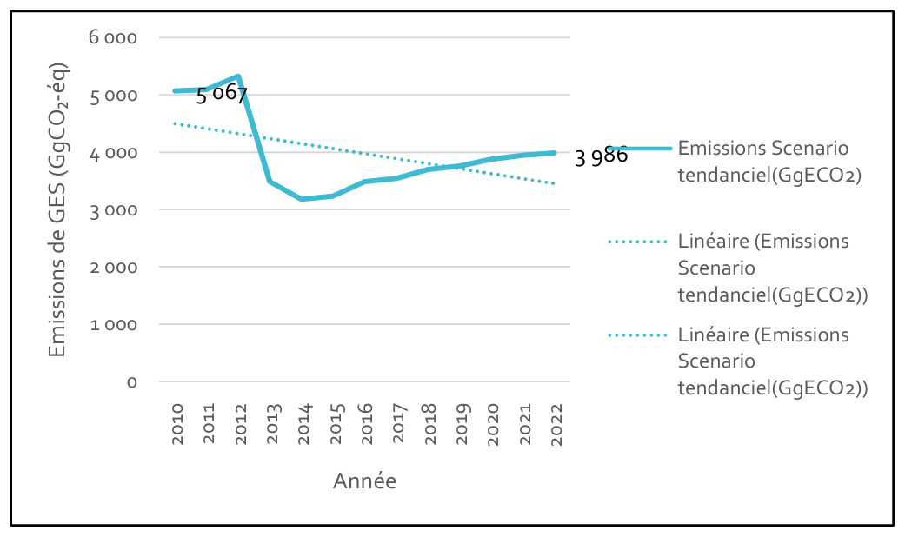
In 2022, out of a total of 3986GgCO₂-éq emitted (i.e. 0.78t CO₂e per capita), the agricultural sector accounted for 75% of national emissions. This predominance reflects the country's economic structure, largely dominated by subsistence farming, livestock rearing and the extensive exploitation of natural resources. The main sources of emissions are enteric fermentation from livestock and the burning of crop residues. The strong dependence on traditional practices, often little mechanised but with low yields, accentuates this agricultural footprint. Emissions from the Forestry and Other Land Use sector, estimated at 737 GgCO₂-éq, come mainly from savannah fires as well as from land-use change (conversion of forests to croplands or pastures).Although the RCA still has substantial forest capital, these emissions indicate growing pressure on natural resources. Net carbon losses in this sector nevertheless remain partly offset by removals linked to natural forests and agroforestry practices, which constitute a major sequestration lever. The energy sector and the industrial processes and product use (PIUP) sector contribute 5.21 % and 0,99 % of the total respectively, reflecting the country's low energy intensity and the absence of heavy industrial activities. The waste sector remains marginal, with less than 0,34 % of emissions, but its importance is tending to grow with urban growth and the uncontrolled burning of waste in the absence of integrated management systems.
Thus, the RCA's emissions profile remains typical of a low-income country, where emissions come mainly from subsistence activities rather than from a modern productive apparatus.
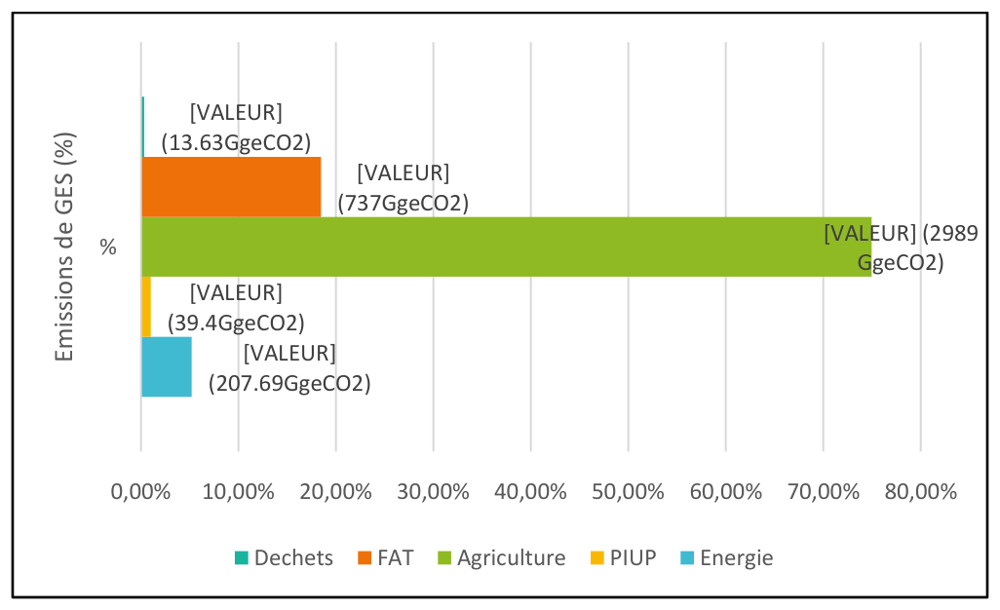
In parallel, the "Forestry and Other Land Use" (FAT) sector shows net removals of –394 624GgCO₂-éq in 2022 with a marginal change of about –0,16 % over the period 2010-2022 (see figure 3).This sequestration capacity is a direct reflection of the immense Central African forest heritage, estimated to cover more than half of the country.
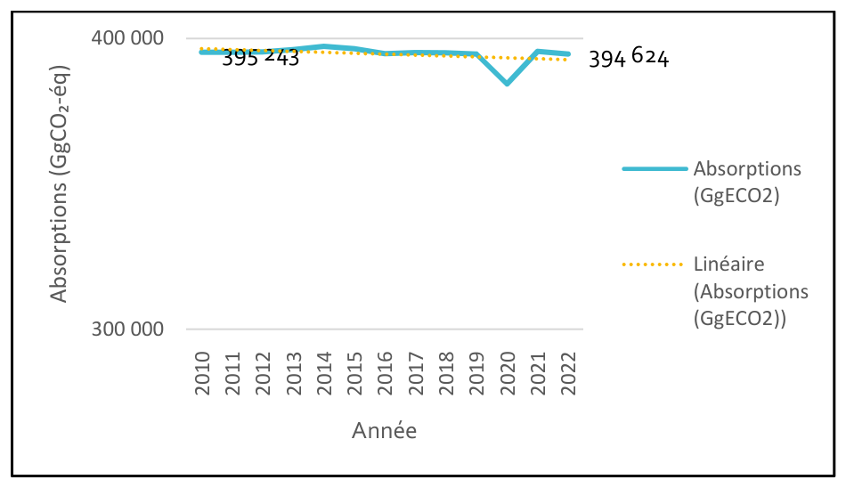
This stability is explained by several structural factors. First, the low population density limits pressure on agricultural land and reduces large-scale deforestation. Second, the low level of industrialisation and the economic slowdown caused by the political and security crises have helped preserve forest cover by reducing land conversion and fossil energy consumption. Lastly, the natural regeneration of vast forest areas, sometimes left fallow following population displacements, has strengthened the resilience of ecosystems.
These figures confirm that the RCA constitutes a net carbon sink at the regional scale. Indeed, for every tonne of CO₂ emitted, the country's forest ecosystems absorb nearly one hundred. This exceptional balance illustrates the country's contribution to climate regulation in the Congo Basin, the planet's second green lung after the Amazon.
The RCA remains a key player in regional carbon neutrality, but this situation remains fragile. Growing anthropogenic pressures — deforestation, bush fires, shifting agriculture, unsustainable logging — threaten the stability of carbon sinks.
The Central African Republic aims to build, by 2035, a low-carbon, forest-based and inclusive economy, in which energy is clean and accessible to all, and restored ecosystems ensure the climate resilience of vulnerable communities, in particular women, young people, persons with disabilities and indigenous peoples.
The overall objective is to reduce the growth of GES emissions by 17 % relative to the business-as-usual trajectory, while strengthening the carbon sink role of its forests and agricultural land.
Analysis of the business-as-usual (BAU) scenario for greenhouse gas (GES) emissions in the Central African Republic over the period 2025–2035 shows a gradual and sustained growth in emissions, reflecting the continuation of the current development model without the implementation of additional mitigation measures.
Between 2025 and 2035, total emissions would rise from 4442GgCO₂-éq to 5585GgCO₂-éq, an increase of about 25.7% over a decade. This trajectory reflects the continuation of a growth model still heavily dependent on fossil resources and the stagnation of traditional agricultural practices, in a context where energy transition policies remain limited. The average annual increase is estimated at 2,32 %, reflecting a sustained but scarcely decarbonised economic dynamic. This trend, if confirmed, would make it more difficult to achieve the objectives of the CDN 3.0 and of the National Development Plan 2024–2028, which aim for greener and more resilient growth.
The agricultural sector remains the main contributor to emissions, accounting for about 69% of the national total in 2035. Its emissions would increase from 3225 GgCO₂-éq in 2025 to 3839 GgCO₂- éq in 2035, growth of 19 %.The energy sector is expected to see a significant increase, with emissions rising from 292GgCO₂-éq in 2025 to 374GgCO₂-éq in 2035, an increase of 28 %. This trend reflects the continuous rise in domestic uses and in fossil fuel consumption. The strong dependence on fuelwood and fossil fuels remains the main constraint on decarbonising the sector. The largest increase is expected in the forestry and other land use (FAT) sector, which rises from 863 GgCO₂-éq in 2025 to 1 285 GgCO₂-éq in 2035, an increase of 49 % over ten years, with average annual growth of 42 GgCO₂-éq. This increase reflects the continuing pressure on forest ecosystems, linked to deforestation for agriculture and fuelwood, savannah fires, and the gradual degradation of secondary forests.
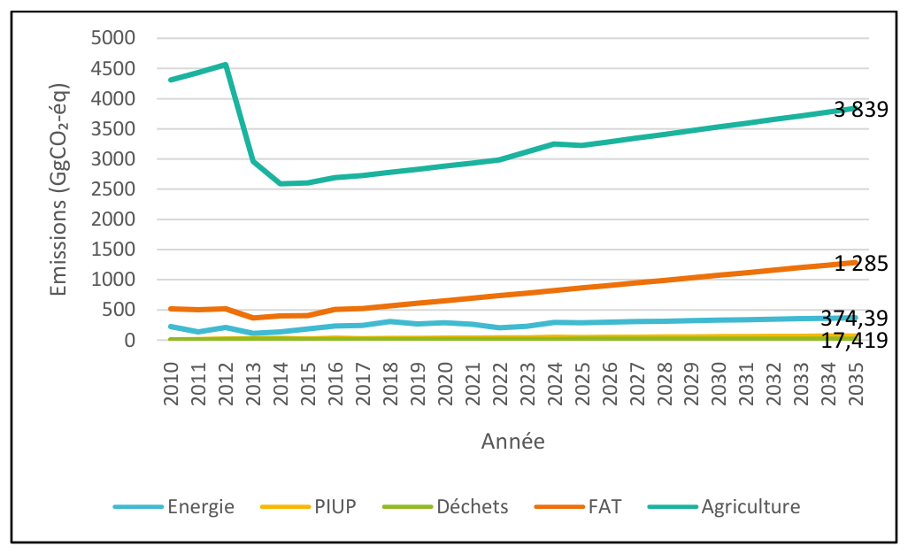
|
SECTOR |
GES emissions (GgeCO2) Year 2025 |
GES emissions (GgeCO2) Year 2030 |
GES emissions (GgeCO2) Year 2035 |
|
Energy |
292 |
333 |
374 |
|
PIUP |
47 |
58 |
69 |
|
Agriculture |
3225 |
3532 |
3839 |
|
FAT |
863 |
1074 |
1285 |
|
Waste |
15 |
16 |
17 |
|
Total |
4442 |
5013 |
5585 |
Moreover, according to the projections, greenhouse gas (GES) removals over the period 2025– 2035 are expected to fall from 391 251GgCO₂-éq in 2025 to 387 844GgCO₂-éq in 2035. This trend reflects an overall decline of 0,87 % over ten years, i.e. an average annual loss of about 340 GgCO₂-éq. The values observed reflect a near-stagnation of national removals, which is typical of a business-as-usual scenario without strengthened forest policies. Despite this slight decrease, the RCA should remain one of the most important carbon sinks in Central Africa.
To curb the upward trend in greenhouse gas emissions, the Central African Republic intends to embark on a gradual transition towards a low-carbon development model based on measures integrated into the main emitting sectors: Energy, Agriculture, Forestry and Other Land Use (AFAT), Industrial Processes and Product Use (PIUP), Waste. These measures would constitute a major lever for slowing the growth of emissions by 2035, while supporting sustainable, low-carbon and socially inclusive economic growth.
Over recent years, the energy sector in the Central African Republic has progressively acquired a coherent set of strategic and planning documents reflecting the Government's determination to ensure better governance of the sector, to improve access to electricity and to promote the transition towards a sustainable and inclusive energy system.
Building on these sectoral steering instruments, the CDN 3.0 will implement several mitigation measures in the traditional energy, electricity, renewable energy and rural electrification sub-sectors. The table below summarises the measures by sub-sector., setting targets for 2030 and 2035, and setting out the actions to be implemented to achieve those targets.
|
Measures |
Indicators |
Baselines in 2025 and Targets (2030&– 2035) |
Associated actions |
|
Unconditional scenario |
|||
|
Reduced dependence on traditional energy. |
Share of biomass in total household energy consumption. |
Baseline (2025): 92% Targets:
|
Deployment of:
Reforms and incentives: exemption from duties/VAT on LPG and simplification of approvals, training of artisans in the manufacture of improved cookstoves. Priority targeting: women, young people, persons with disabilities, and indigenous peoples. |
|
Conditional scenario |
|||
|
Reduced dependence on traditional energy. |
Share of biomass in total household energy consumption. |
Baseline (2025): 92% Targets:
|
|
|
Measures |
Indicators |
Baselines in 2025 and Targets (2030&– 2035) |
Associated actions |
|
Unconditional scenario |
|||
|
Diversification of clean energy generation sources. |
Share of ENR in the national electricity mix (%) in installed capacity. |
Baseline (2025): 80% Targets:
|
Rehabilitation and equipping/extension of existing dams (Boali I&equipping of 10-20 MW at Boali 3) + Launch of small hydropower plants (5-10 MW) for rural areas + Deployment of hybrid solar mini-grids (2-11 MW in total), for a total of 17MW by 2030 and 41MW by 2035. |
|
Conditional scenario |
|||
|
Diversification of clean energy generation sources. |
Share of ENR in the national electricity mix (%) in installed capacity. |
Baseline (2025): 80% Targets:
|
Deployment of a total of 26MW by 2030 and 55MW by 2035. |
|
Measures |
Indicators |
Baselines in 2025 and Targets (2030&– 2035) |
Associated actions |
|
Unconditional scenario |
|||
|
Energy Efficiency. |
Number of energy-efficient lighting units in households |
Baseline (2025): 69760 Targets:
|
Deployment of 56600additional units in households by 2030 and 150000 by 2035. Priority targeting: households headed by women, young people, persons with disabilities, and indigenous peoples. Integration of energy efficiency clauses into public procurement + Establishment of a labelling/certification system for efficient products + Support for imports through green credit lines (local banks, multilateral funds). |
|
Conditional scenario |
|||
|
Energy Efficiency. |
Number of energy-efficient lighting units in households |
Baseline (2025): 69760 Targets:
|
Deployment of 182900 units in households by 2030 and 265400 additional units by 2035. Priority targeting: households headed by women, young people, persons with disabilities, and indigenous peoples. |
The projections presented below (figure 5 and table 11) reflect the expected effects of the progressive implementation of these mitigation measures provided for in the CDN 3.0 and in the sectoral strategies of the Energy domain. Thus, the trajectories modelled under the three scenarios — business-as-usual, unconditional mitigation and conditional mitigation — illustrate the differentiated levels of effort deployed by the Central African Republic.
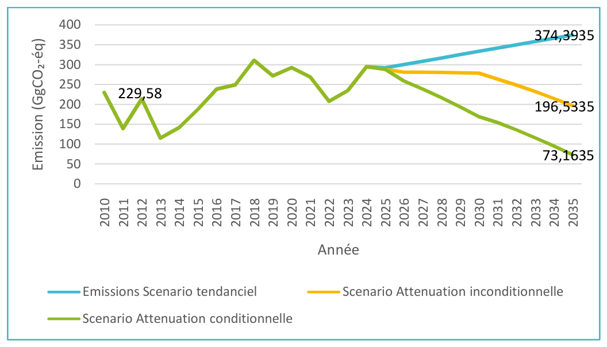
|
Year |
Emissions – Business-as-usual scenario (GgeCO₂) |
Unconditional scenario (GgeCO₂) |
Reduction vs business-as-usual (%) |
Conditional scenario (GgeCO₂) |
Reduction vs business-as-usual (%) |
|
2025 |
292 |
292 |
– |
292 |
– |
|
2030 |
333 |
278 |
-16,5 % |
169 |
-49,2 % |
|
2035 |
374 |
197 |
-47,5 % |
73 |
-80,5 % |
Analysis of the emission projections in the energy sector highlights a progressive divergence between the three scenarios studied — business-as-usual, unconditional mitigation and conditional mitigation — reflecting the differentiated effect of emission reduction policies according to their degree of implementation and of international support.
By 2030, the unconditional scenario would already deliver a reduction of about 16,5 % in emissions compared with the business-as-usual trajectory, reflecting the effects of national measures implemented on the basis of domestic resources, such as improved energy efficiency, the progressive deployment of improved cookstoves and the increased integration of renewable energy into the energy mix. However, the scope of these actions remains limited without additional support. The conditional scenario illustrates the full implementation of the energy sector's mitigation potential. Emissions fall by 49% in 2030 and 80.5% in 2035. This trajectory reflects a structural shift towards a resilient and decarbonised economy.
The comparative analysis of the three curves shows that mitigation efforts produce substantial gains: between the business-as-usual and conditional scenarios, the emissions gap reaches nearly 300 GgCO₂-éq in 2035. This differential corresponds to the mitigation potential that the RCA can mobilise in this area if the financing, governance and technology conditions are met.
In the area of agriculture, the RCA's policy rests on an evolving architecture:
|
Measures |
Indicators |
Baselines in 2025 and Targets (2030&– 2035) |
Associated actions |
|
Unconditional scenario |
|||
|
Sustainable agriculture |
Quantity of organic fertilisers used by farming households, including households headed by women and young people. |
Baseline (2025): 1775 t Targets:
|
Creation of 20 equipped composting platforms (one per agricultural department or sub-prefecture). Training of 1 000 producers (60% women and young people) in rapid composting techniques. Create 40 green composting cooperatives, 60% of them headed by women and young people. Establishment of a national database on the production and use of organic fertilisers. |
|
Conditional scenario |
|||
|
Sustainable agriculture |
Quantity of organic fertilisers used by farming households, including households headed by women and young people. |
Baseline (2025): 1775 t Targets:
|
Creation of 50 equipped composting platforms (one per agricultural department or sub-prefecture). Training of 2 000 producers (60% women and young people) in rapid composting techniques. Create 100 green composting cooperatives, 60% of them headed by women and young people. |
|
Measures |
Indicators |
Baselines in 2025 and Targets (2030&– 2035) |
Associated actions |
|
Unconditional scenario |
|||
|
Substitution agroforestry (avoidance of slash-and-burn/deforestation) |
Annual agroforestry areas |
Baseline (2025): 2000 ha Targets:
|
Establishment of local nurseries of agroforestry species. Train 5 000 producers (60% women and young people) in the management of agroforestry systems. Identify and reforest 28 000 ha of degraded land with mixed agroforestry systems. |
|
Conditional scenario |
|||
|
Substitution agroforestry (avoidance of slash-and-burn/deforestation) |
Annual agroforestry areas |
Baseline (2025): 1100 ha Targets:
|
Train 10 000 producers (60% women and young people) in the management of agroforestry systems. Identify and reforest 33 000 ha of degraded land with mixed agroforestry systems. Deploy a GIS/GPS system for monitoring agroforestry plots. |
The trend in projected emissions in the agriculture sector results directly from the progressive implementation of the mitigation measures provided for in the sectoral strategies and the CDN 3.0. The scenarios presented below reflect different levels of commitment to and support for these policies, making it possible to assess the potential impact of national efforts and international support on the reduction of agricultural emissions in the medium and long term.
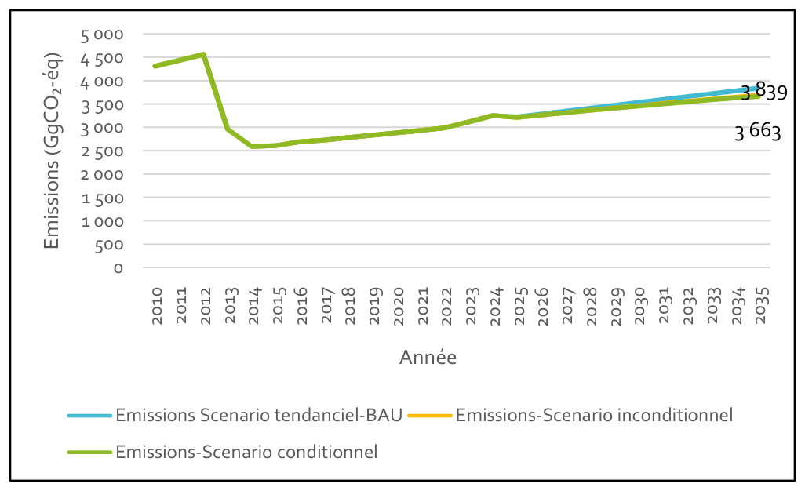
|
Year |
Emissions – Business-as-usual scenario (GgCO₂-éq) |
Unconditional mitigation scenario (GgCO₂-éq) |
Reduction vs business-as-usual (%) |
Conditional mitigation scenario (GgCO₂-éq) |
Reduction vs business-as-usual (%) |
|
2025 |
3 225 |
3 225 |
- |
3 225 |
- |
|
2030 |
3 532 |
3 532 |
-1.98 % |
3 456 |
-2.13 % |
|
2035 |
3 839 |
3 839 |
-3,90 % |
3 663 |
-4.57% |
The comparative analysis of the three emission trajectories of the agricultural sector highlights a 19 % increase in emissions over ten years under the business-as-usual scenario, owing to the persistent dependence on traditional, emission-intensive practices (slash-and-burn, inefficient management of animal manure, absence of stabilised organic amendments).
The unconditional and conditional scenarios show that the mitigation measures currently planned —agroforestry practices, progressive introduction of organic fertilisation— limit the growth of emissions, but without reversing the trend. These results point to progressive mitigation that is nonetheless still insufficient to align the agricultural sector with trajectories compatible with long-term carbon neutrality. At the same time, they demonstrate the existing potential for reducing GES emissions in this area.
In the area of Forestry, the Central African Republic has for several years undertaken a set of strategic reforms aimed at reconciling sustainable forest management with the fight against climate change. These efforts are part of an integrated vision of land management, environmental governance and local development. In this area, REDD+ serves as the climate–forest compass. The national REDD+ Strategy (2021) sets out the lines of intervention against deforestation and degradation (land-use planning, economic alternatives, governance) and proposes a national forest monitoring system/MNV to measure results. The national REDD+ Investment Framework 2020–2025 translates these options into programmes, notably on territorial planning and land tenure security. At the international level, the governance of exported timber is framed by the FLEGT Voluntary Partnership Agreement (APV) concluded with the European Union. The CDN 3.0 positions itself as an instrument for operationalising these policies, by proposing the following measures and actions.
|
Measures |
Indicators |
Baselines in 2025 and Targets (2030&– 2035) |
Associated actions |
|
Unconditional scenario |
|||
|
Avoided deforestation |
Share of slash-and-burn agriculture in deforestation |
Baseline (2025): 90% Targets:
|
See actions on reducing dependence on traditional energy &Substitution agroforestry |
|
Conditional scenario |
|||
|
Avoided deforestation |
Share of slash-and-burn agriculture in deforestation |
Baseline (2025): 90% Targets:
|
See actions on reducing dependence on traditional energy &Substitution agroforestry |
The figure illustrates the trajectory of greenhouse gas (GES) emissions from the FAT sector (Forests and Other Land) over the period 2010-2035. This sector concentrates the activities of deforestation, forest degradation, land conversion and extensive agricultural practices such as slash-and-burn. These dynamics make FAT a significant contributor to national emissions, but also an essential lever for reduction and long-term carbon sequestration.
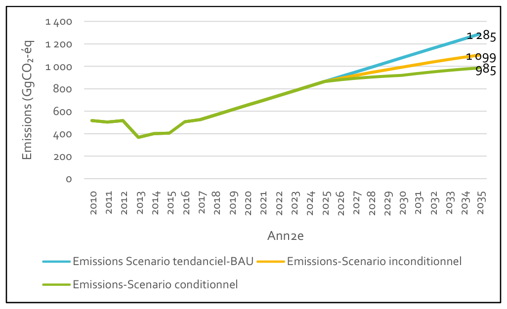
|
Year |
Emissions – Business-as-usual scenario (GgCO₂-éq) |
Unconditional mitigation scenario (GgCO₂-éq) |
Reduction vs business-as-usual (%) |
Conditional mitigation scenario (GgCO₂-éq) |
Reduction vs business-as-usual (%) |
|
2025 |
863 |
863 |
- |
863 |
- |
|
2030 |
1 074 |
991 |
-7.78 % |
919 |
-14.44 % |
|
2035 |
1 235 |
1099 |
-14,44 % |
935 |
-23.33% |
Under the business-as-usual scenario, which extends current dynamics without additional measures; emissions rise from 863 GgCO₂-éq in 2025 to 1 235 GgCO₂-éq in 2035, an increase of more than 40 % over ten years. Under the configuration of the mitigation scenario, emissions reach 991 GgCO₂-éq in 2030 and 1 099 GgCO₂-éq in 2035, corresponding to reductions of 7,8 % and 14 % compared with the business-as-usual scenario. Assuming enhanced implementation of the measures dependent on international financing, emissions are reduced to 919 GgCO₂-éq in 2030 and then 935 GgCO₂-éq in 2035, representing decreases of 14,4 % and 23,3 % respectively compared with the reference trend.
These dynamics show that the FAT sector remains both a source and a solution in the fight against climate change. The trend observed up to 2035 underscores the urgency of strengthening sustainable land management policies and mobilising green financing in order to turn conditional commitments into concrete results.
In RCA, the contribution to greenhouse gas emissions in the PIUP area comes almost exclusively from the refrigeration/air-conditioning (RAC) sub-sector, notably through HFCs in imported air conditioners and refrigerators. The other uses (SF₆ in electrical grids, NF₃ in electronics) are marginal or absent.
Although F-gases (HFCs, PFCs, SF₆, NF₃) do not constitute a major item at the scale of the Central African economy and environment, the CDN 3.0 measures within its climate strategy the country's footprint linked to appliances containing fluorinated gases (such as certain refrigeration and air-conditioning devices, etc.), notably by promoting the use of more efficient equipment or of less harmful alternatives. This approach demonstrates that all emission sources are taken into account, even minor ones.
|
Measures |
Indicators |
Baselines in 2025 and Targets (2030&– 2035) |
Associated actions |
|
Unconditional scenario |
|||
|
Progressive substitution of refrigerant gases with a high Global Warming Potential (PRG) |
Level of annual HFC use in refrigeration Use in air conditioning. Mobile |
Baseline (2025): 14.55t Targets:
Baseline (2025): 36.15t Targets:
|
Ratification and implementation of the Kigali Amendment to the Montreal Protocol. Regulation on the import of equipment. Integration of low-PRG solar solutions into health (vaccines) and agricultural (food storage) programmes. Incentive taxes on imports of appliances using HFCs with a PRG > 1000 (e.g. R-410A, R-404A. |
|
Conditional scenario |
|||
|
Progressive substitution of refrigerant gases with a high Global Warming Potential (PRG) |
Level of annual use in refrigeration Use in air conditioning. Mobile: |
Baseline (2025) 14.55t Targets:
Baseline (2025): 36.15t Targets:
|
Establishment of a national certification programme for refrigeration technicians. Setting up of a first recovery/reclamation (R&R) centre in Bangui to prevent end-of-life releases. Reduction of customs duties on green equipment (R-290, R-600a, R-32). |
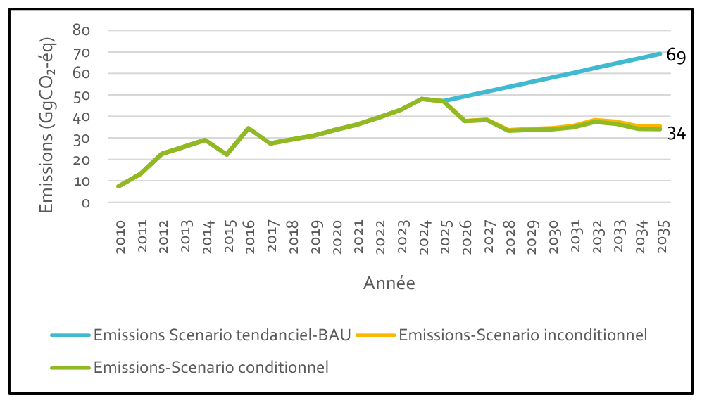
|
Year |
Emissions – Business-as-usual scenario (GgCO₂-éq) |
Unconditional mitigation scenario (GgCO₂-éq) |
Reduction vs business-as-usual (%) |
Conditional mitigation scenario (GgCO₂-éq) |
Reduction vs business-as-usual (%) |
|
2025 |
47 |
47 |
– |
47 |
– |
|
2030 |
58 |
34 |
-40.65 % |
34 |
-41,65 % |
|
2035 |
69 |
35 |
-48.86 % |
34 |
-50,67 % |
In the business-as-usual scenario, emissions from the PIUP sector increase progressively as a result of the growth in the equipment stock and in demand for thermal comfort. Without additional mitigation measures, emissions would undergo a structural increase of nearly 46 % over the period. This trajectory reflects a persistent dependence on technologies using HFCs with a high PRG.
In the unconditional scenario, emissions would be reduced by 40 to 49 % relative to the business-as-usual scenario, reflecting the combined effect of regulating the refrigerant market, raising user awareness, and improving equipment maintenance. Nevertheless, these measures remain limited given the high cost of low-PRG alternatives and the weakness of the institutional monitoring framework (MNV) for HFCs.
The conditional scenario introduces a more pronounced change, thanks to the accelerated adoption of clean technologies. Under this assumption, the progressive substitution of HFCs by natural refrigerants (CO₂, NH₃, light hydrocarbons) or by HFOs with a very low PRG leads to a larger reduction in emissions.
RCA has a policy and regulatory foundation for waste management, based on the Environmental Code and several sectoral plans:
Institutionally, responsibility for waste management lies with the Ministry of the Environment, Sustainable Development and Ecological Transition, in collaboration with local authorities, in particular the Bangui city council.
The waste sector is an opportunity for mitigating greenhouse gases (GES) in RCA, given the predominance of open dumps, uncontrolled burning and the absence of recovery channels.
However, the current proposal of mitigation measures does not prove relevant in the national context. Indeed, the options considered — such as controlled landfilling or the biological stabilisation of organic waste — presuppose collection, sorting and covering infrastructure that does not exist to date. Their partial implementation, without a system for capturing or recovering biogas, paradoxically leads to an increase in methane (CH₄) emissions, the sector's main greenhouse gas.
Under current management conditions — dominated by open-air burning and anaerobic decomposition in open dumps — any incomplete transformation of the treatment method risks replacing a flow of CO₂ from combustion with a larger flow of CH₄, whose global warming power is 28 times greater. Thus, securing the waste management chain, strengthening municipal capacities and planning adaptation actions (hygiene, health, drainage, urban resilience) remain more relevant than mitigation measures ill-suited to the current technical and institutional context.
Figure 9 presents the trend in the national economy's overall greenhouse gas (GES) emissions between 2010 and 2035, covering all sectors (energy, agriculture, forestry, waste and other land uses). The aim is to assess the emissions trajectory under the three scenarios.
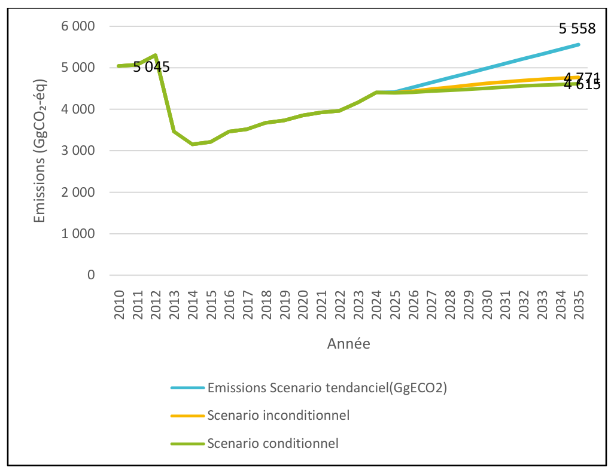
|
Year |
Emissions – Business-as-usual scenario (GgCO₂-éq) |
Unconditional mitigation scenario (GgCO₂-éq) |
Reduction vs business-as-usual (%) |
Conditional mitigation scenario (GgCO₂-éq) |
Reduction vs business-as-usual (%) |
|
2025 |
4 417 |
4 417 |
– |
4 417 |
– |
|
2030 |
4 988 |
4 625 |
-7.27 % |
4 504 |
-9.68 % |
|
2035 |
5 558 |
4 771 |
-14.16 % |
4 615 |
-16.97 % |
The trend in agricultural emissions between 2025 and 2035 reflects the trajectory of a sector still heavily dependent on traditional practices, but engaged in a gradual transition towards more sustainable production methods. The projections show three possible paths — business-as-usual, unconditional and conditional — which reflect different levels of mitigation effort and structural transformation of the sector.
In the business-as-usual scenario, emissions rise steadily over the decade, from about 4 417GgCO₂-éq in 2025 to 5 558GgCO₂-éq in 2035. This increase of nearly 26 % illustrates the continuation of the current agricultural model, dominated by the extensive expansion of cultivated land, the low use of organic inputs, and the prevalence of slash-and-burn cultivation. This trajectory is typical of unregulated agricultural development, where demographic pressure and agricultural demand drive an increase in the areas farmed, at the expense of productivity and environmental sustainability.
The unconditional scenario, which relies on RCA's domestic efforts, manages to slow the growth of emissions without, however, reversing it. Emissions reach about 4 771GgCO₂-éq in 2035, a reduction of nearly 14 % compared with the reference trend. This result stems from the gradual spread of low-carbon energy practices and from policies to curb slash-and-burn agriculture. These initiatives demonstrate a willingness to transform the sector, but their implementation remains limited by the lack of financial and technical resources at the national scale.
By contrast, the conditional scenario, supported by external financial and technological assistance, offers a more ambitious outlook. It leads to a reduction of about 17 % in emissions by 2035, that is, more than 900 GgCO₂-éq avoided compared with the business-as-usual scenario. This performance rests essentially on a low-carbon-footprint energy sector and on sustainable forestry.
The analysis also demonstrates that the agricultural sector has a significant mitigation potential which requires additional investment. Agriculture thus appears both as a challenge and as an opportunity for the country's climate transition. Consolidating public policies, disseminating agroecological innovations, gradually increasing agroforestry, and supporting producers will be decisive in steering the sector towards low-carbon and resilient growth by 2035.
|
Measures |
Indicators |
Baselines in 2025 and Targets (2030&– 2035) |
Associated actions |
|
Unconditional scenario |
|||
|
Forest restoration and reforestation |
Area of restored forest (ha) |
Baseline (2025): 6848 ha Targets:
|
Local agreements (multi-year access and maintenance protocols). Reforest 15 000 ha of savannahs and fallow land. Early burning days. Monitoring (survival sampling at 6 and 12 months; annual polygon mapping using free Sentinel imagery). |
|
Coffee-cocoa agroforestry - Planting with shade trees |
Area (ha) |
Baseline (2025): Coffee (831 569 ha) and cocoa (132 725ha) Targets:
|
Rehabilitate and replant 200 000 ha of old plantations with shade trees (Albizia, Acacia, Terminalia), of which 60% dedicated to women, young people, persons with disabilities, and indigenous peoples. |
|
Conditional scenario |
|||
|
Forest restoration and reforestation |
Area of restored forest (ha) |
Baseline (2025): 6848 ha Targets:
|
Restore 30 000 ha of degraded forests and savannahs. Multi-year performance-based contracts with GCV/associations (payment per verified ha). Strengthened MNV: GPS surveys + mobile app, annual external audit of areas and survival. Incentives: "zero-burning" vouchers (cover crop seeds, tools). |
|
Coffee-cocoa agroforestry - Planting with shade trees |
Area (ha) |
Baseline (2025): Coffee (831 569 ha) and cocoa (132 725ha) Targets:
|
Establish 400 000 ha of new coffee-cocoa-banana-tree agroforestry plantations, of which 60% dedicated to women, young people, persons with disabilities, and indigenous peoples. Set up 5 certified semi-industrial processing units (Rainforest, Fair Trade). Create a national "Café-Cacao vert RCA" label. Create a GIS database for monitoring plots. |
Figure 10 and Table 13 present the projected trend in carbon removal capacity in the Forests, Agriculture and Land (FAT) sector over the 2025, 2030 and 2035 horizons. These projections reflect the expected effects of the progressive implementation of the mitigation measures set out in the CDN 3.0.
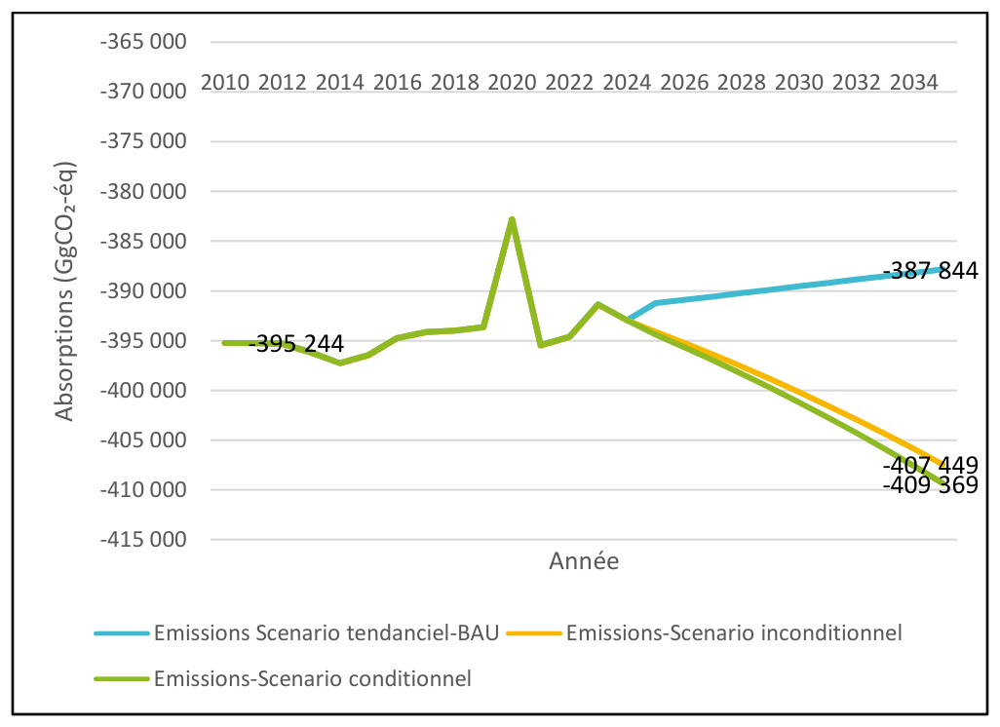
|
Year |
Removals – Business-as-usual scenario (GgCO₂-éq) |
Unconditional mitigation scenario (GgCO₂-éq) |
Removal gain vs business-as-usual (%) |
Conditional mitigation scenario (GgCO₂-éq) |
Removal gain vs business-as-usual (%) |
|
2025 |
-391 251 |
-391 251 |
– |
-391 251 |
– |
|
2030 |
-389 547 |
-400 173 |
+2,73 % |
-401 227 |
+3,00 % |
|
2035 |
-387 844 |
-407 449 |
+5,05 % |
-409 369 |
+5,55 % |
Between 2025 and 2035, the business-as-usual scenario shows a cumulative decline of 0,87 %, that is, an average annual loss of about –0,09 %. This negative trend reflects a gradual erosion of the natural sink, due to forest degradation and the insufficiency of new restoration initiatives. The country maintains its role as a sink, but without any real growth in sequestration. The unconditional scenario shows a moderate improvement: the removal gain rises from +2,7 % in 2030 to +5,05% in 2035 compared with the business-as-usual scenario. However, the impact remains limited because of the financial, technical and institutional constraints that hinder the large-scale roll-out of these practices. The conditional scenario, for its part, shows markedly stronger results, with removal gains reaching +3% in 2030 and +5,55 in 2035, attributable to forest restoration and to coffee-cocoa agroforestry when it is established on bare, degraded or fallow agricultural land.
By 2035, the Central African Republic aims to build an economy and a society resilient to climate change, structured around five major transformations:
This vision is based on an integrated and territorial approach to adaptation, which couples governance, innovation and social inclusion. It places vulnerable communities —women, young people, persons living with a disability, indigenous communities — at the heart of the transition, in order to turn climate vulnerabilities into development opportunities.
|
Measures |
Indicators |
Baseline in 2025andTargets (2030&– 2035) |
Associated actions |
|
Strengthening of generation infrastructure and local autonomy to anticipate variations in resources. |
Installed capacity Electricity access rate Rural electrification access rate |
Baseline (2025): 90.5MW Targets:
Baseline (2025): 16% Targets:
Baseline (2025): 2 % Targets:
|
Acceleration of priority projects (2026-2027). Rehabilitation and equipping, extension of existing dams (Boali). Launch of small hydropower plants for rural areas. Construction of grid-connected solar parks. Deployment of hybrid solar mini-grids. |
The adaptation measures presented in the table below reflect an integrated energy strategy, structured around strengthening electricity generation, improving access to electricity and developing rural electrification.
They aim to increase installed capacity by 48 % over ten years. This progression reflects a strategy of investment in the diversification of the energy mix, combining hydropower, solar, biomass and, eventually, decentralised micro-grids. The local autonomy referred to relates to the establishment of regional generation capacity able to secure supply and to reduce vulnerability to hydrological variations or to fossil energy imports.
The second action aims to improve the overall electricity access rate. Such a progression presupposes an unprecedented acceleration in the pace of electrification, supported by massive investment programmes in network extension, the modernisation of distribution infrastructure and the implementation of off-grid solutions. Solar mini-grids, domestic photovoltaic systems and public-private partnerships should play a central role in meeting the needs of peri-urban and rural areas.
The third action concerns the development of rural electrification, an essential pillar for reducing regional inequalities and stimulating local development. The access rate in rural areas, estimated at only 2 % in 2025, is expected to rise to 7,2 % in 2030 and 10,7 % in 2035. Although these figures remain modest, they mark a positive trend in a context of budgetary constraints and persistent insecurity. The development of community solar mini-grids and the training of local technicians are key levers for reaching these targets. These actions will contribute not only to energy access, but also to reducing pressure on biomass, the main energy source for households, thereby helping to combat deforestation and greenhouse gas emissions.
Overall, this trajectory is consistent with the orientations of the DPSE (2023), the Electrification Master Plan 2040, and the CDN 3.0, while supporting ODD 7, 9 and 13 on clean energy, innovation and the fight against climate change.
|
Measures |
Indicators |
Baseline in 2025and Targets (2030 &– 2035) |
Associated actions |
|
Improving agricultural productivity through improved varieties and organic fertilizer inputs, in particular among households |
Agricultural yield (t/ha) |
Cassava: Baseline: 3.4 t/ha Targets:
Groundnut: Baseline: 1,2 t/ha Targets:
|
Seed system & planting material in place with traceability and rapid renewal. Technical packages through ACDA/ICRA/ONASEM&ONGs. Access to agricultural inputs for vulnerable communities (women, young people,persons with disabilities, indigenous peoples). |
|
headed by women (21.8% of agricultural households), young people, persons with disabilities and indigenous peoples. |
Rate of use of organic fertilizers (manure) by agricultural households, including households headed by women and young people. |
Maize: Baseline:1,3t/ha Targets:
Sorghum: Baseline: 1,5t/ha Targets:
Sesame: Baseline: 0.8 t/ha Targets:
Baseline: 0.72% Targets:
|
Access to agricultural micro-credit for vulnerable communities. Mini-irrigation. Processing units for vulnerable communities. Logistical support. 1 demonstration site/sub-prefecture). Incentives (Mini-grants). Organization (with transhumant herders). S&E (ENA). Priority targeting: households headed by women, young people, persons with disabilities, and indigenous peoples. |
|
Improve existing pastures. |
Number of pilot sites on improved forage management. |
Baseline: No data available on pastures. Targets:
|
|
|
Measures |
Indicators |
Baseline in 2025and Targets (2030 &– 2035) |
Associated actions |
|
Development of agropastoral processing units, in support of income diversification and the strengthening of community resilience |
Number of agropastoral processing units (of which 60% targeting women, young people, persons with disabilities, displaced persons) |
Baseline: 63 processing units. Targets:
|
National mapping of the needs of vulnerable communities + Identification of priority production hubs. Pilot projects: Modernization of existing units (eco-efficient equipment, renewable energy) + Commissioning of new units targeting as a priority the |
|
vulnerable groups (women, young people, persons with disabilities, displaced persons). |
vulnerable communities. Expansion: Creation of additional new units targeting as a priority vulnerable communities. |
||
|
Establishment of an early warning system for climate risks in the agropastoral field. |
Existence of the SAP |
Baseline: Existence of an IPC Technical Working Group (GTT) at the Ministry of Agriculture (with FAO support).
|
Establishment order. Operationalization (meteorological monitoring networks). Consolidation & scaling up. Publication of a monthly bulletin. |
|
Development of 7 new land use plans (POT), including the updating and mapping of the delimitation of agropastoral zones (ZAGROP). |
Number of new gender-sensitive POT. |
Baseline: No national land use/allocation plan (multisectoral, tiered and legally enforceable).
|
Diagnosis & data. Scenarios & multi-use zoning including that of women, young people, persons with disabilities, displaced persons, and indigenous peoples. Consultations, legalization & adoption. Operationalization & monitoring. |
The ambition set out by the CDN and the sectoral strategies for adaptation in the agricultural sector is to double, or even triple, agricultural yields by 2035, through the introduction of improved seeds, the promotion of organic fertilizers and the dissemination of agroecological practices adapted to local conditions. A key indicator of this shift is the rate of use of organic fertilizers (manure), which today remains marginal – barely 0,72 % of agricultural households in 2025 – but which could rise to between 4 % and 7 % by 2035 depending on the scenarios. This development reflects not only the growing importance of family livestock keeping and the use of animal manure, but also the intention to encourage soil- and climate-friendly approaches.
By focusing on local processing and the diversification of rural incomes (average annual growth of more than 10 % in the number of units between 2025 and 2035), the CDN seeks to strengthen the economic resilience of agricultural households by stabilizing incomes in the face of climate and economic shocks.
Improving governance of the sector requires the establishment of an Early Warning System (SAP). This system will make it possible to monitor climate anomalies, droughts and floods, and above all to anticipate their impacts on food security. Its operationalization is a pillar of institutional resilience, ensuring faster and better coordinated responses to crises.
In parallel, the planning of agricultural and pastoral land use is another structuring pillar. This participatory approach aims to prevent use conflicts between agriculture, livestock keeping and forestry, while promoting the rational management of natural resources, in line with the climate-peace and security principles, the national REDD+ Strategy, and the Land Policy.
|
Measures |
Indicators |
Baseline in 2025and Targets (2030 &– 2035) |
Associated actions |
|
Strengthening forest governance and monitoring under the REDD+/APV-FLEGT framework. |
Ratio of PEA, community forests and artisanal logging permits for timber and fuelwood granted and monitored: at least 50%. |
Baseline: 14 PEA (12 operational), 17 community forests and 23 Artisanal Logging operations granted, of which 23 monitored
|
Combine field control and remote sensing (fire/flow alerts); Publish dashboards (permits issued, controls, sanctions). Independent observation by civil society. Establishment of a Legality Verification System. Non-detriment trade findings. Promotion of secondary species with commercial potential. |
|
Strengthening the institutional, technical and financial framework for carbon markets. |
Existence of legislation on carbon benefit rights, reflecting the rights of vulnerable communities (women, young people, persons with disabilities, indigenous peoples). % of AP valorized under the carbon market. |
Baseline: Decree No. 25-175 Setting the Rules for Carbon Mechanisms in RCA. 2030 target:
Baseline: 1,3 million carbon credits generated between 2016-2020 and sold between 2023 and 2025 (Chinko).
|
Draft and adopt a Law establishing a national key for sharing benefits from carbon sales, including vulnerable communities. Create by law a National Registry (projects, credits, ownership of benefits, sharing, transfers). Establish an accreditation Procedure (application file, FPIC/CLPE, safeguards, complaints mechanism). Capacity building of the national side on the carbon market. Develop and submit a FREL/FRL9 to the CCNUCC Secretariat. Set up a forest observation centre and Operationalize the NFMS10 (satellite data + inventories/sample plots) and publish an MNV methodology. Set up the SIS and publish the “Summary of Information” on the Cancun safeguards (prerequisite for payments11. |
The adaptation measures proposed in this field aim to strengthen forest governance, modernize resource monitoring, and mobilize carbon market benefits as a sustainable lever for financing local actions.
Together, these measures reflect a systemic approach to adaptation in the forestry sector. They combine three complementary levels of action:
By aligning its actions with international frameworks (REDD+, APV-FLEGT), the CDN is moving towards an inclusive carbon economy, in which every hectare protected or restored generates climate, economic and social benefits.
|
Measures |
Indicators |
Baseline in 2025and Targets (2030 &– 2035) |
Associated actions |
|
Integrated management and sustainable planning of water resources. Integration of water resource monitoring into the national climate MNV. |
Number of strategic and programmatic steering documents developed and incorporating ACC. Existence of sustainable water resource monitoring systems. |
Baseline: Documents do not exist Baseline: System does not exist
Baseline: System does not exist
|
Diagnosis and development of strategic tools (quantitative/qualitative objectives, climate scenarios 2030–2050). Validation Acquisition of equipment and training of officials for the establishment of the SNIEau.
|
|
Access to drinking water and resilient infrastructure. |
Rate of access to drinking water in rural areas (% of households headed by women) Rate of access to drinking water in urban areas (% of households headed by women). |
Baseline: rural TAEP: 27%
Baseline: urban TAEP: 48%
|
Construction of boreholes + mini drinking water supply systems using photovoltaic systems. Extension of the SODECA water supply network. Construction of SODECA water supply networks in other towns. |
|
Strengthening the institutional capacities of municipalities in the collection, management and recycling of solid waste. |
Number of urban sorting and composting centres in Bangui and the urban capitals |
Baseline: 0
|
Identification of suitable sites (non-floodable peripheral area). Construction of sorting and composting centres with a capacity of 30 t/day per site. Train 200 municipal agents and GIE in selective collection and composting, including 60% women and young people. Establishment of a municipal database on waste flows and avoided emissions. |
The adaptation measures proposed by the CDN in this field aim to strengthen water governance, promote integrated and participatory management of the resource, and invest in climate-resilient infrastructure capable of ensuring equitable and sustainable access to water for all.
|
Measures |
Indicators |
Baseline in 2025and Targets (2030 &– 2035) |
Associated actions |
|
Territorial planning and climate risk management |
Number of strategic and programmatic steering documents developed and incorporating Adaptation to Climate Change (ACC). |
Baseline: Non-existent
|
Formulation of the PNDU. Updating of the draft urban planning law/decrees (SDAU/PDU/POS procedures, environmental assessment, participation, e-permitting). Capacity building Extension to 5–6 additional capitals: key SDAU + PDU + POS; Consolidation & investments. |
|
Strengthening the legal and regulatory framework, taking vulnerable communities into consideration. |
Number of legal instruments adopted that incorporate the considerations of vulnerable communities. |
Baseline: Land and State Property Code and Agro-pastoral Land Code not promulgated.
|
Policy adoption and promulgation. Pilots, scaling up and monitoring-evaluation. |
|
Sustainable housing |
Number of steering documents developed and incorporating ACC |
Baseline: Non-existent
|
Design/consultations(urban/rural & indigenous peoples). Drafting of policies & of the legislative and regulatory framework. Pilots & adjustments. Adoption & entry into force. Roll-out. |
|
Resilient and sustainable infrastructure |
% of the population covered by stormwater drainage systems in order to anticipate the effects of recurrent flooding (including the % of women). |
Baseline: 24% urban and 10% rural (of which 50% women).
|
Diagnostic & baseline (Priority cities - to be confirmed through the diagnostic): Bangui, Berbérati, Bambari, Bossangoa, Bouar, Kaga-Bandoro, Bria, Bangassou, Mbaïki, Ndélé, Obo. “Quick-effect” measures: Large-scale drain clearing, Small green solutions. Pilot structuring networks and scaling up. |
In the field of housing and infrastructure, the proposed adaptation measures reflect a determination to transform urban and territorial planning in order to strengthen the resilience of the population to the effects of climate change. These measures aim to establish proactive urban planning based on risk prevention and long-term sustainability.
The structural reform of the land tenure legal and regulatory framework makes it possible to govern land use, reduce land-related conflicts and secure investments in housing and infrastructure. It reflects growing recognition of the link between land justice, social inclusion and climate adaptation. The “housing” dimension targets the design and construction of sustainable and resilient dwellings that take into account local climatic conditions and the specific needs of vulnerable populations, in particular indigenous peoples.
The final pillar targets the modernisation and resilience of physical infrastructure. This ambition requires substantial investment in urban hydraulic works (drainage channels, retention basins, lift pumps) in order to mitigate the effects of extreme climate events and protect high-density housing areas, thereby contributing to urban stability and the protection of livelihoods.
|
Measures |
Indicators |
Baseline in 2025and Targets (2030 &– 2035) |
Associated actions |
|
Integration of adaptation into health policies |
Number of vulnerability assessments, targeting the primarily the vulnerable communities (women, youth, indigenous peoples). |
Baseline: Non-existent
|
Methodological framing: OMS approach (Health Vulnerability and Adaptation Assessment – V&A). Development of vulnerability profiles of ecosystems and vulnerable communities. Policy integration and planning. |
|
Epidemiological surveillance and early warning systemstargeting the primarily the vulnerable communities (women, youth, indigenous peoples). |
Existence of an early warning system. |
Baseline: Non-existent
|
Governance & framework (Decree or orderestablishing the SCAPS). Technical architecture & data. Alert models & operational SOPs. Territorial pilots. National scale-up & institutionalisation. |
The objective set for 2030 is to facilitate integration into national sectoral policy. The assessments will make it possible to better identify major climate risks (rising temperatures, water stress, emerging diseases) and to develop appropriate action plans. They will also serve as the basis for revising the National Health Policy and the operational programmes of the Ministry of Health, so as to explicitly include climate issues, thereby fostering the construction of a preventive and anticipatory public health system capable of integrating environmental risks into its policies and budgets.
The Joint Climate–Health Early Warning System (SCAPS) will combine meteorological and hydrological data with epidemiological information, making it possible to rapidly detect correlations between climate phenomena and the emergence of diseases. The SCAPS will thus facilitate preparedness, prevention and response to epidemics, while improving coordination among public health, meteorology and disaster management actors.
|
Measures |
Indicators |
Baseline in 2025and Targets (2030 &– 2035) |
Associated actions |
|
Modernisation of hydrometeorologi cal observatories. |
Number of functional hydrometeorologic al stations. |
Baseline: 3 out of 13 weather (synoptic) stations are functional over 620 000km2, and 5 active hydrological stations.
|
Master plan for the hydro- meteorological network. Pilot deployment. Extension and integration. |
|
Integration of climate change education into school and university curricula, including technical and vocational education and training. |
Number of curricula developed and implemented, targeting primarily vulnerable areas and communities (women, youth, indigenous peoples). |
Baseline: Non-existent.
|
Curricula & resources: Produce teaching kits. Teacher training. School life: Climate clubs. |
|
Climate finance |
Number of financial instruments established and operational. % of the conditional resources of CDN 3 mobilised. Existence of a system for monitoring domestic climate finance. |
Baseline: Fund Non-existent.
Baseline: 24% of the external financing of CDN 2.0 mobilised between 2021 and 2024 (i.e. 142 MUSD).
Baseline: system non-existent 2030 targets: Existence of a climate budget tagging system for domestic resources (Climate Budget Tagging, CBT). |
Statutes of FONACAR; Define governance; operational manual. Technical set-up and initial resources. International mobilisation. Broader deployment and monitoring and evaluation. Establish a national “Climate finance-CDN” Task Force. Develop a costed national climate finance strategy (2026–2030 and 2030-2035). Create an MRV- financing framework. Publish a biennial “Climate finance-CDN” report (integrated into the CCNUCC BTR). Develop the Tagging Manual. Adopt the nomenclature (decree/order) and update the Budget Circular: mandatory ex-ante tagging. Budget pilot: pilot ministries. Extension and annual reporting. |
|
Climate-Peace and Security |
Number of initiatives developed in relation to climate-peace and security. |
Baseline: Low14
|
Launch 3 community pilot projects for the joint management of natural resources in cross-border areas (Lobaye– Congo, Vakaga–Sudan, Ouham–Chad). |
|
Integration of new lines of research on adaptation. |
Number of vulnerability assessments/adaptati on measures developed in relation to migration- and endogenous knowledge. |
Baseline: Low
|
Methodological framing: Development of vulnerability profiles of ecosystems and vulnerable communities. Policy integration and planning. |
|
Establishment and Operationalisati on of the Measurement, Reporting and Verification (MNV) system |
Existence of an operational MNV system. |
Baseline: MNV committee decree in place
|
Develop an institutional and legal framework for the MNV (revision of the decree, procedures manual). Create a national MNV database. Train sectoral officials in reporting (GIEC 2006). Develop a web and GIS platform for the automatic transmission of MNV data. Equip ministries with GIEC&GES Inventory software. Produce the biennial transparency reports (BTR) in accordance with the CCNUCC. |
In its CDN 3.0, the Central African Republic has adopted cross-cutting commitments intended to strengthen the country's resilience while creating the conditions for better climate governance. The ambition set out for 2030 and 2035 — to rehabilitate, modernise and extend the station network — marks a major strategic shift. The aim is to build a national data ecosystem capable of supporting planning and feeding into national and regional forecasting systems.
The second pillar, devoted to education and training, highlights a challenge of cultural and generational transformation. This process aims to create an informed, aware social base capable of adopting more sustainable behaviours and technologies.
The third pillar, that of climate finance, is the keystone of the entire framework. The operationalisation of the National Climate Fund (FONACAR) and the establishment of a climate budget tagging system (CBT) represent structuring advances. These instruments aim to make climate finance more transparent, traceable and geared to national priorities. Their effective implementation will make it possible not only to strengthen the country's credibility with donors, but also to improve coordination between domestic and external sources of financing.
In a national context still marked by fragility, the measure linking climate, peace and security is of particular importance. Recurrent tensions over access to natural resources, in particular water, forests and pastureland, are exacerbated by the effects of climate change. The CDN proposes to develop integrated initiatives to promote social cohesion through the joint management of natural resources in the most vulnerable areas of the north and east. These initiatives will foster community mediation, the participation of women and inclusive local governance, in order to turn natural resources, sources of conflict, into levers for dialogue and lasting stability.
The Central African Republic also intends to make emerging themes a pillar of its adaptation and resilience strategy. The objective is to strengthen the production of scientific knowledge useful for public planning and decision-making in the face of climate risks. Two priority areas guide this effort: human mobility and the valorisation of endogenous knowledge.
Finally, the establishment and operationalisation of the national Measurement, Reporting and Verification (MNV) system represent a key step in strengthening climate governance and the country's compliance with the requirements of the Paris Agreement. By 2030, the objective is to establish a solid legal and institutional framework, through the revision of the existing decree and the development of a procedures manual specifying roles, responsibilities and data transmission channels. In parallel, the creation of a national MNV database will make it possible to integrate information from the various sectors (energy, agriculture, forestry, waste, transport, etc.) and to facilitate the monitoring of the CDN indicators (CDN).By 2035, the MNV system must be fully operational and enable the regular production of the Biennial Transparency Reports (BTR) required by the CCNUCC.
|
UNCONDITIONAL |
CONDITIONAL |
|||
|
DESIGNATION |
CAPEX15 |
OPEX16 |
CAPEX |
OPEX |
|
ENERGY |
793 281 697 |
25 431 884 |
2 999 116 376 |
96 659 618 |
|
AGRICULTURE |
125 450 955 |
6 252 843 |
563 855 620 |
28 141 635 |
|
FAT |
593 797 578 |
51 211 808 |
758 239 614 |
61 121 651 |
|
PIUP |
497 770 |
55 308 |
2 248 537 |
249 837 |
|
TOTAL |
1 513 028 000 |
82 951 842 |
4 323 460 147 |
186 172 741 |
|
UNCONDITIONAL (USD) |
CONDITIONAL (USD) |
TOTAL (USD) |
|
|
MITIGATION COSTS |
1 595 979 842 |
4 509 632 888 |
6 105 612 730 |
The tables presented above reflect the investment needs required to implement climate change mitigation measures in the RCA by 2035, according to two levels of ambition:
Over the period 2025–2035, the national portfolio of mitigation measures represents a financial effort of approximately 1,6 billion USD under the unconditional scenario and close to 4,5 billion USD under the conditional scenario. This difference of nearly 3 billion USD represents the volume of additional investment that the RCA will need to mobilise from its partners in order to achieve its mitigation objectives. Energy actions form the core of this, absorbing nearly 70 % of investments, reflecting the priority given to the energy transition: substitution of biomass by clean fuels (LPG), electrification through renewables and promotion of energy efficiency.
Forests and other land, an essential asset for natural carbon sequestration, account for approximately 18 % of total conditional costs, confirming their central place in the RCA's climate strategy. The agricultural sector is the third priority area of investment. Costs relating to industrial processes and product use remain marginal.
The overall cost structure (95 % CAPEX and 5 % OPEX) illustrates the nature of climate investments in the RCA, dominated by infrastructure construction, the establishment of plantations and the provision of durable equipment, with moderate operating costs over time.
Thus, the full implementation of the conditional measures would enable the RCA to reduce its emissions in key sectors while strengthening energy security, rural productivity and environmental governance.
|
UNCONDITIONAL |
CONDITIONAL |
|||
|
DESIGNATION |
CAPEX |
OPEX |
CAPEX |
OPEX |
|
ENERGY |
58 958 333 |
2 830 000 |
397 291 667 |
19 070 000 |
|
AGRICULTURE |
55 130 000 |
2 999 559 |
264 980 000 |
14 417 251 |
|
FAT |
11 766 667 |
2 805 000 |
18 400 000 |
4 620 000 |
|
WATER RESOURCES |
4 400 000 |
1 506 389 |
43 300 000 |
14 824 236 |
|
LAND-USE PLANNING HOUSING AND INFRASTRUCTURE |
304 700 000 |
87 601 250 |
1 008 200 000 |
289 857 500 |
|
HEALTH |
2 400 000 |
2 175 000 |
3 600 000 |
2 175 000 |
|
CROSS-CUTTING MEASURES |
12 300 000 |
4 727 500 |
16 300 000 |
4 727 500 |
|
TOTAL |
449 655 000 |
104 644 698 |
1 752 071 667 |
349 691 487 |
|
UNCONDITIONAL (USD) |
CONDITIONAL (USD) |
TOTAL (USD) |
|
|
ADAPTATION COSTS |
554 299 697 |
2 101 763 154 |
2 656 062 851 |
Analysis of the total cost of adaptation shows that the RCA is moving towards a resilience strategy based on infrastructure and essential services, while recognising the need for institutional and social strengthening.
Under the unconditional scenario, the RCA would mobilise approximately 554 million USD over the period considered, of which 450 million USD in investment (CAPEX) and 105 million USD in OPEX. The OPEX/CAPEX ratio is close to 23 %, reflecting a substantial effort in project maintenance and monitoring. The conditional scenario, which presupposes the mobilisation of additional international financing, would bring the total cost of adaptation to approximately 2,1 billion USD over the period, i.e. nearly four times more than the unconditional scenario. It includes 1,75 billion USD in CAPEX and 350 million USD in OPEX, with a slightly lower OPEX/CAPEX ratio (20 %), which indicates a strong infrastructure component.
The combined costs of adaptation and mitigation, on domestic financing, amount to 2,15 billion USDover the period 2025-2035, i.e. 215 million USD per year. Compared with the average GDP of 2,58 billion USD, this annual effort corresponds to nearly 8,3 % of annual GDP, i.e. more than double the structural budget deficit and nearly one third of the total national budget, which stands at around 600 to 700 million USD per year (see table 2).
The unconditional commitment of the Central African government reflects a credible political will to assume a national share in the climate response. However, from a macroeconomic standpoint, it appears economically ambitious and budgetarily fragile.
For this commitment to be sustainable, several adjustment levers will be necessary:
The scale-up phase between 2025 and 2035 for the unconditional contribution of the Central African government is presented below.
Phase 1 - Start-up and consolidation (2025 – 2027): The government could allocate 60 to 80 million USD per year, or about 3 % of GDP, a level that is still sustainable. These funds would be used to strengthen the institutions responsible for climate (establishment of FONACAR, creation of a national MRV monitoring system, climate planning within the national budget), while financing pilot adaptation and mitigation projects.
Phase 2 - Expansion and co-financing (2028 – 2031): As financial capacities consolidate, the country enters a phase of gradual growth in climate investments. With a slight improvement in growth (2 to 3 %), the national contribution could reach 120 to 150 million USD per year, or about 5 to 6 % of GDP. At the same time, the government must activate public-private partnerships (PPPs) and mobilize external co-financing to complement the national share. Climate expenditure is integrated at the same time into the Medium-Term Budgetary Framework (CBMT).
Phase 3 - Maturity and sustainability (2032 – 2035): The final stage corresponds to a period of budgetary and institutional maturity, in which climate finance becomes a lever for green growth. With the economy having gained in stability and productivity, the national contribution could progressively reach 200 to 230 million USD per year, or 7 to 8 % of GDP.
The conditional contribution of RCA represents the international financial effort expected to complement national resources in the implementation of climate measures.
Over the period 2025–2035, conditional needs are estimated at about 6,61 billion USD, distributed between:
These amounts are in addition to the government's unconditional commitment, estimated at 2,15 billion USD over the same period, bringing total climate financing to about 8,76 billion USD. The purpose of the conditional scheme is therefore to translate this ambition into a gradual, sustainable and realistic financing trajectory, building on the scaling up of national capacities and on the growing support of technical and financial partners.
Phase 1 - Start-up and initiation of support (2025–2027): The first phase of conditional financing corresponds to a period of preparation and establishment of climate governance and financing structures. The main objective is to create the institutional and technical conditions necessary for the effective absorption of external financing. During this phase, the volume of conditional financing is estimated at between 300 and 400 million USD. Priority actions would focus on:
This stage prepares RCA to mobilize larger financing from 2028 onwards, while ensuring the credibility and transparency of climate fund management mechanisms.
Phase 2 - Expansion and structuring co-financing (2028–2031): The second phase constitutes the scale-up period for conditional climate financing. Building on the institutional and technical achievements of the previous phase, RCA can then scale up its priority programmes and attract public, private and multilateral co-financing. The volume of financing would amount to about 550 to 650 million USD per year, i.e. nearly 2,6 billion USD over four years, corresponding to 40 % of the conditional total.
Priority investments would concern:
Phase 3: Maturity and sustainability (2032–2035): The final phase corresponds to the full maturity of conditional climate financing, marking a complete integration of international financing into national budgetary and economic planning. It represents the period in which RCA will have consolidated its capacities, strengthened the transparency of its financial systems, and demonstrated its credibility to donors.
The annual volume of conditional financing would reach between 700 and 800 million USD, i.e. about 3 billion USD over the period, corresponding to 45 % of the conditional total. Investments would concern the sustainability of the programmes initiated in the previous phases: national deployment of agroforestry, generalization of access to clean energy, large-scale reforestation, adaptation of the health system and of housing to the climate, and strengthening of the resilience of infrastructure.
At this stage, climate finance becomes an integrated component of economic development, supporting both the reduction of emissions and the resilience of the population.
The enhanced transparency framework established by the Paris Agreement provides for a reporting system centred on the Biennial Transparency Report (BTR), a document structured around the following five pillars (see figure 1 on the next page):
On this basis, the proposed MNV system is built on the requirements of the BTR. To this end, the establishment of the integrated MNV and S&E system involves the steps described below.
In order to ensure effectiveness, the governance framework must fall under the responsibility of a single institution, which will also be responsible for producing the various reports. The Monitoring, Reporting and Verification unit established by decree no. 24.241 of 20 September 2024 could assume this function.
The effectiveness of the coordinating institution must rest on the following roles:
Figure 11 presents the MNV proposal built on the requirements of the BTR.
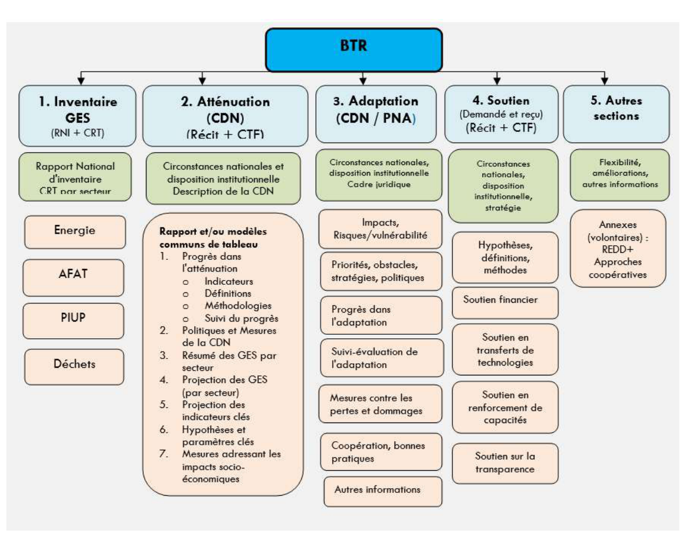
It is proposed to establish a multisectoral National Working Group (GTN) to facilitate the production and transmission of sectoral statistical data and the validation of the various expert reports in accordance with the guidelines of the Intergovernmental Panel on Climate Change (GIEC), pursuant to decree no. 24.241 of 20 September 2024. This group will be composed of 4 sub-groups structured according to the requirements of the BTR: National Inventories Sub-Working Group (SGTN-GES); National Sub-Working Group on the Assessment of Mitigation Measures (GTN-AT); National Sub-Working Group on the Assessment of Vulnerabilities and Adaptation Measures (GTN-ADAPT); National Support Sub-Working Group (GTN-SOUT).
The National Working Group serves two objectives:
The GTN-GES Sub-group) is based on: (i) A group of technical experts working in the various sectors of activity related to GES inventories and officially designated by their hierarchy; (ii) An appropriate organic text setting out the technical and financial arrangements for the functioning of the Group as well as the terms of reference of each stakeholder; (iii) A sectoral data exchange protocol established by an official text; (iv) An information portal on GES inventories.
The activities of the Sub-Group must meet the following scheme for the CDN pillar:
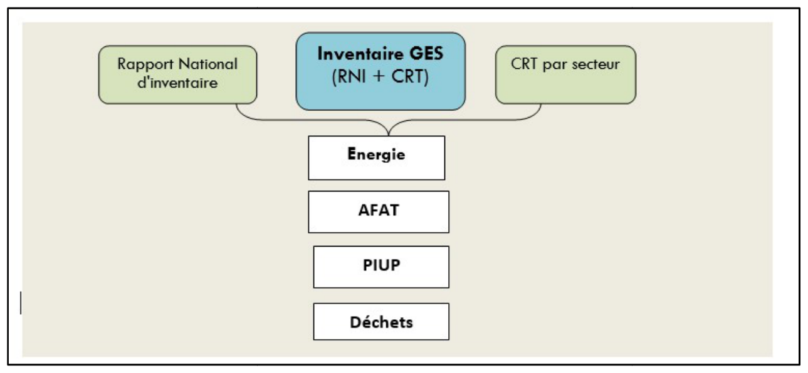
This component also includes the assessment of progress towards achieving the CDN mitigation objectives, using defined progress (or performance) indicators. The main actors identified in the mitigation MNV system are:
The tasks of the GTN-AT will include:
The structure for the monitoring and evaluation of the thematic groups of adaptation actions will be as shown in the following figure.
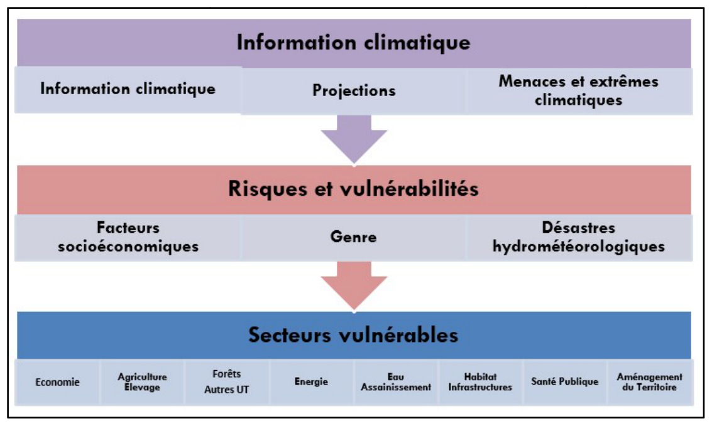
Support, as agreed in the BTR, comprises three main components:
The National Support Working Group will be a mechanism institutionalized by a legal text for monitoring actions in the four components. MEDD and the Ministries of Economy and Finance must open consultations to formalize this mechanism, particularly with regard to finance, involving the sectoral departments concerned.
The support MNV scheme is presented below:
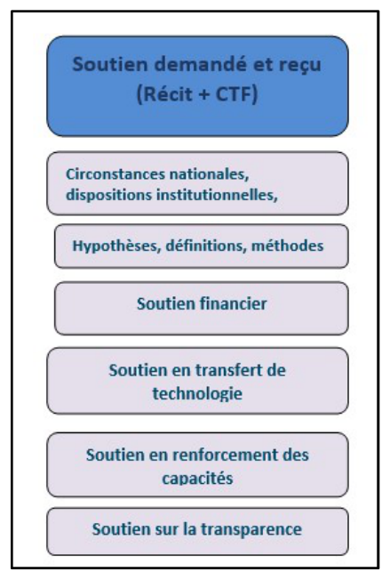
The MNV mechanism will be combined with a Monitoring and Evaluation (S&E) system to take into account the activities of the thematic groups that will be created within the National Working Group.
Three levels are proposed for the operationalization of the MNV and S&E mechanism.
First level: Measurement. This level concerns the collection of basic data, the completion of indicators and the exchange of information on the basis of an officially established memorandum of understanding. The activities at this level are carried out by the sectoral coordination bodies.
Second level: Reporting. The second level is under the responsibility of the National Working Group and its sub-groups); Each sub-group produces the report relating to the CDN pillar that concerns it. The reports are fed by the information produced and transmitted by the sectoral coordination bodies.
Third level: Verification. This level is under the responsibility of CN-Climat, which compiles the various reports of the National Working Groups. At this stage, provision is made for the creation of an ad hoc working group in charge of Quality Assurance. This ad hoc group will be composed of the following institutions: University, research centres, independent experts. It will be responsible for carrying out external evaluations with a view to certifying the quality of the data and indicators and also the conformity of the various reports produced with international requirements.
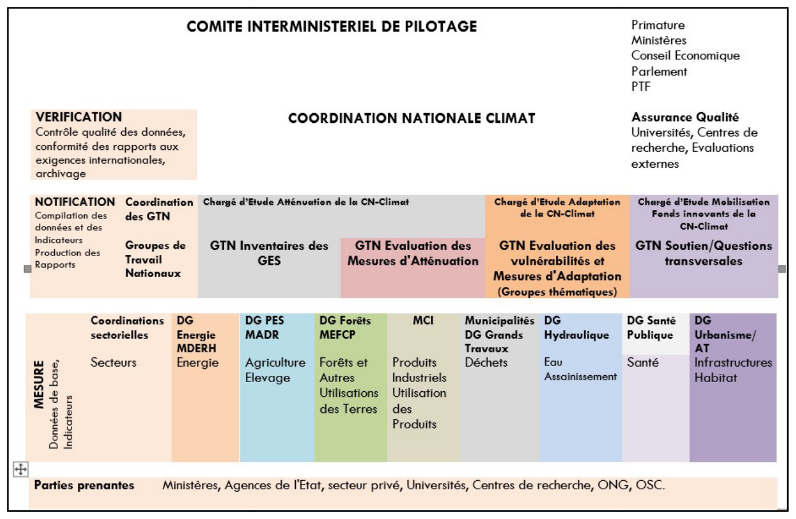
The roadmap below is proposed to facilitate the operationalization of the integrated MNV and monitoring-evaluation in the short and medium terms.
|
Planned activity (Priority) |
Expected result |
Responsible entity |
|
|
Institutional arrangement |
|||
|
1 |
Development of a legal instrument adopting the architecture of the integrated MNV and S&E system (or mechanism) |
MEDD adopts, through an official text, an integrated MNV and S&E system, the basic instrument for monitoring government actions to combat climate change |
MEDD |
|
2 |
Development and formalization of legal instruments for the establishment of the sectoral MNV systems |
Official texts establishing the sectoral MNV systems (with a list of entities by sector) |
MEDD/CN-Climat |
|
3 |
Development of the terms of reference and of the technical (schedules, frequency of meetings) and financial (including potential sources of funding) arrangements for the sectoral MNV systems |
Terms of reference for the sectoral MNV systems and detailed work programmes |
MEDD/CN-Climat Sectoral lead institution |
|
5 |
Development and formalization of legal instruments for the establishment of the National Working Groups |
Official texts establishing the National Working Groups for the CDN pillars (with a list of entities by pillar) |
MEDD/CN-Climat |
|
6 |
Development of the terms of reference and of the technical (schedules, frequency of meetings) and financial (including potential sources of funding) arrangements for the sectoral MNV systems |
Terms of reference of the National Working Groups and detailed work programmes for each pillar of the CDN |
MEDD/CN-Climat/Designated leader of each GTN |
|
Operationalization of the MNV and S&E framework |
|||
|
10 |
Consensus on the list and the definition of the indicators for the priority sectors of the CDN |
List of indicators and their definitions available, meeting the SMART criterion |
CN-Climat/Sectoral MNV leaders |
|
11 |
Formulation of data-sharing agreements (protocols) between the sectoral bodies and the data providers, including the private sector, and specification of the sharing arrangements (frequency, deadlines, communication instruments to be used, quality assurance and control, budget, etc.) |
Documents specifying the data-sharing arrangements and the list of information expected from each sector, between the data providers and the CDN sectors |
MEDD/CN-Climat/Sectoral MNV leaders |
|
12 |
Formulation of projects to support sectoral institutions aimed at improving the integrated and/or sectoral MRV/S&E systems. |
On the basis of the needs identified during the diagnostic assessment, the sectoral focal points contribute to the formulation of support projects aimed at strengthening/building the technical capacities of MRV/S&E and sectoral systems. |
CN-Climat |
|
13 |
Implementation of capacity-building activities for sectoral institutions in terms of developing and monitoring sectoral MRV/S&E processes, including the private sector and civil society |
Sectoral ownership by the focal points within the lead ministries (as well as the sectoral data providers) of the capacities to develop indicators and monitor sectoral MRV/S&E processes |
CN-Climat |
|
14 |
Systematic and institutional communication of the relevant data by the sectoral coordination units to the GTN of the CDN pillars, according to the frequencies, deadlines and formats agreed upon |
The necessary baseline data and the indicators are produced at the sectoral level, processed according to the agreed formats and communicated to those responsible for the GTN |
Sectoral MNV leaders |
|
15 |
Submission of the reports provided for under the enhanced transparency framework of the CCNUC |
The CCNUCC reports are submitted regularly, in the prescribed formats, through the institutional and operational MNV and S&E system |
CN-Climat/GTN leaders |
|
16 |
Creation of a platform of the national climate observatory type |
Meet the objective of communication for the general public |
MEDD/CN-Climat |
|
Institutional assessment (2027 to 2030) |
|||
|
17 |
Reassessment of the legal and institutional framework and proposal for improvement of the integrated and sectoral MNV and S&E systems |
Assessment report and improvement of the MNV system. |
MEDD/CN-Climat |
|
1. |
Quantifiable information on the reference point (including, as appropriate, a base year) |
|
|
(a) |
Reference year(s), base year(s), reference period(s) or other starting point(s) |
Reference year for emission projections: 2024 Reference year for the BAU emission target: 2035 |
|
(b) |
Quantifiable information on the reference indicators, their values in the reference year(s), base years, reference periods or other starting points and, as appropriate, in the target year |
The projected emission level in 2035 is 5 585 GgeCO2. |
|
(d) |
Target relative to the reference indicator, expressed numerically, for example as a percentage or amount of reduction |
The reduction in GES emissions is 17% compared with the reference level (BAU) in 2035. |
|
(e) |
Information on the data sources used to quantify the reference point(s) |
The fourth national communication of the RCA was used to quantify the GES reference level. |
|
(f) |
Information on the circumstances under which the Party country may update the values of the reference indicators |
The BAU scenario was corrected and updated on the basis of the final data of the latest inventory available in 2024 (GES). The RCA plans to update the GES inventory in the second biennial report scheduled for 2026. A measurement, reporting and verification (MNV) tool for emissions will be developed and will be used to update the inventory. The reference indicators may change following the update. |
|
2. |
Implementation deadlines and/or periods |
|
|
(a) |
Timeframe and/or implementation period, including start and end dates, in accordance with any other relevant decision adopted by the Conference of the Parties serving as the meeting of the Parties to the Paris Agreement (CMA) |
1ierJanuary 2025-31 December 2035. |
|
(b) |
Whether it is a single-year or multi-year target, as appropriate |
Single-year target (2035). |
|
3. |
Scope and coverage |
|
|
(a) |
General description of the target |
The proposed mitigation measures will enable the RCA to reduce its GES emissions compared with the business-as-usual scenario. The level of GES reduction in 2035 is, in absolute terms, 943 GgeCO2, and in relative terms, 17%. |
|
(b) |
Sectors, gases, categories and pools covered by the nationally determined contribution, including, as appropriate, in accordance with the guidelines of the Intergovernmental Panel on Climate Change (GIEC) |
Greenhouse gases: CO2, CH4, N2O. |
|
(c) |
How the Party country has taken into consideration paragraphs 31(c) and (d) of decision 1/CP.2117 |
The revised CDN includes all relevant categories of anthropogenic emissions or removals, consistent with the 2006 GIEC Guidelines. |
|
(d) |
Mitigation co-benefits resulting from Parties' adaptation actions and/or economic diversification plans, including a description of specific projects, measures and initiatives of Parties' adaptation actions and/or economic diversification plans |
Mitigation co-benefits may be expected from the implementation of the following adaptation measures: Increase in installed capacity; pilot sites on improved fodder management; valorization of the AP under the carbon market. |
|
4. |
Planning process |
|
|
(a) |
a) Information on the planning processes that the Party country has undertaken to prepare its CDN and, if available, on the implementation plans |
The process was led by the National Climate Coordination unit, with the support of the Green Climate Fund (FVC) and UNDP. A Steering Committee (CoPIL) representative of all parties (including representatives of women's, youth and indigenous peoples' organizations) acted as the Intersectoral Technical Working Group tasked with supporting the process of formulating and validating the deliverables at the various stages. |
|
(c) |
How the Party country's preparation of its CDN has been informed by the outcomes of the global stocktake, in accordance with Article 4, paragraph 9, of the Paris Agreement |
The second CDN of the RCA was submitted in 2021. In accordance with Article 4, paragraph 9, of the Paris Agreement, this third CDN is being prepared five years after the second. The revision of the CDN drew on the first global stocktake of 2023 of the United Nations Framework Convention on Climate Change (CCNUCC). |
|
5. |
Assumptions and methodological approaches, including those for estimating and accounting for anthropogenic greenhouse gas emissions and, as appropriate, removals |
|
|
(a) |
Assumptions and methodological approaches used for accounting for anthropogenic greenhouse gas emissions and removals corresponding to the Party country's CDN, in accordance with paragraph 31 of decision 1/CP.21 and the accounting guidance adopted by the Meeting of the Parties to the Paris Agreement (CMA) |
Emissions and removals are reported in accordance with the GIEC guidelines. There is methodological consistency between with regard ième to the reference level, between the 4 national communication and the CDN The RCA intends to report on the GES inventory in accordance with decision 18/CMA.1. It will report on the progress made in implementing the CDN by 31 December 2026. |
|
(d) |
GIEC methodologies and metrics used to estimate greenhouse gas emissions and removals |
IGES tool: Tier 1 level method (GES Inventory Manual 1996, revised version, and 2006). Reference year: 2024 Reference data: Fourth National Communication |
|
(i) |
How the reference indicators and the reference levels are constructed |
The national inventory report of the fourth national communication was used and corrected in order to construct the reference scenario. It is combined with a statistical method of polynomial regression and growth scenarios set out in the sectoral policy instruments. They may be improved and/or revised in future processes through the provision of more data and the confirmation or correction of the values generated by the regressions. |
|
6. |
How the Party country considers its CDN to be fair and ambitious in the light of its national circumstances |
|
|
(a) |
How the Party country considers its nationally determined contribution to be fair and ambitious in the light of its national circumstances; |
Despite the country's socio-economic situation (191ième country out of 193 on the HDI in 2025), the RCA aims to contribute to the reduction of greenhouse gas emissions at the global level, in accordance with the principle of common but differentiated responsibility. The revised CDN presents, in relative terms, more realistic and more credible ambitions in view of the data used and the verification system: 17% reduction compared with the BAU scenario. The country is a major carbon sink (394 624 GgCO₂-éq in 2022), which it intends to protect and to increase to 409 369 GgeCO2 in 2035, through the proposed sequestration measures. |
|
(b) |
Fairness considerations, including a reflection on equity |
See 6 (a) |
|
(c) |
How the Party country has addressed Article 4, paragraph 3, of the Paris Agreement18 |
See 4 (c). Idem for 6 (c) and 6 (d) |
|
7. |
How the CDN contributes towards achieving the objective of the Convention as set out in its Article 2 |
|
|
(a) |
How the nationally determined contribution contributes towards achieving the objective of the Convention as set out in its Article 2 |
See 4 (c). |
|
(b) |
How the nationally determined contribution contributes to Article 2, paragraph 1(a), and Article 4, paragraph 1, of the Paris Agreement |
See 4 (c). The revised CDN of the RCA is based on an improved and more robust database and tools for estimating the emissions and removals of the reference scenario and the reductions brought about by the mitigation measures. |